（如果你是直接被連結到這個頁面的，建議你先看看導讀和第一章！）
「問題講清楚，就解決了一半。」 ~ 某人[1]（👈 懸停引用可展開）
「你不是幾分鐘前才用過這句嗎？」你問。沒有，第一章是 2024 年 5 月上線的，這章是 2024 年 8 月才上的。隔了三個月，我再提醒你一次那句話。
也再提醒你一次：我們要講清楚、要解決的問題，就是價值對齊問題：
我們怎麼做出能穩健服務人道價值觀的 AI？
第一章講過，這個問題可以這樣拆：
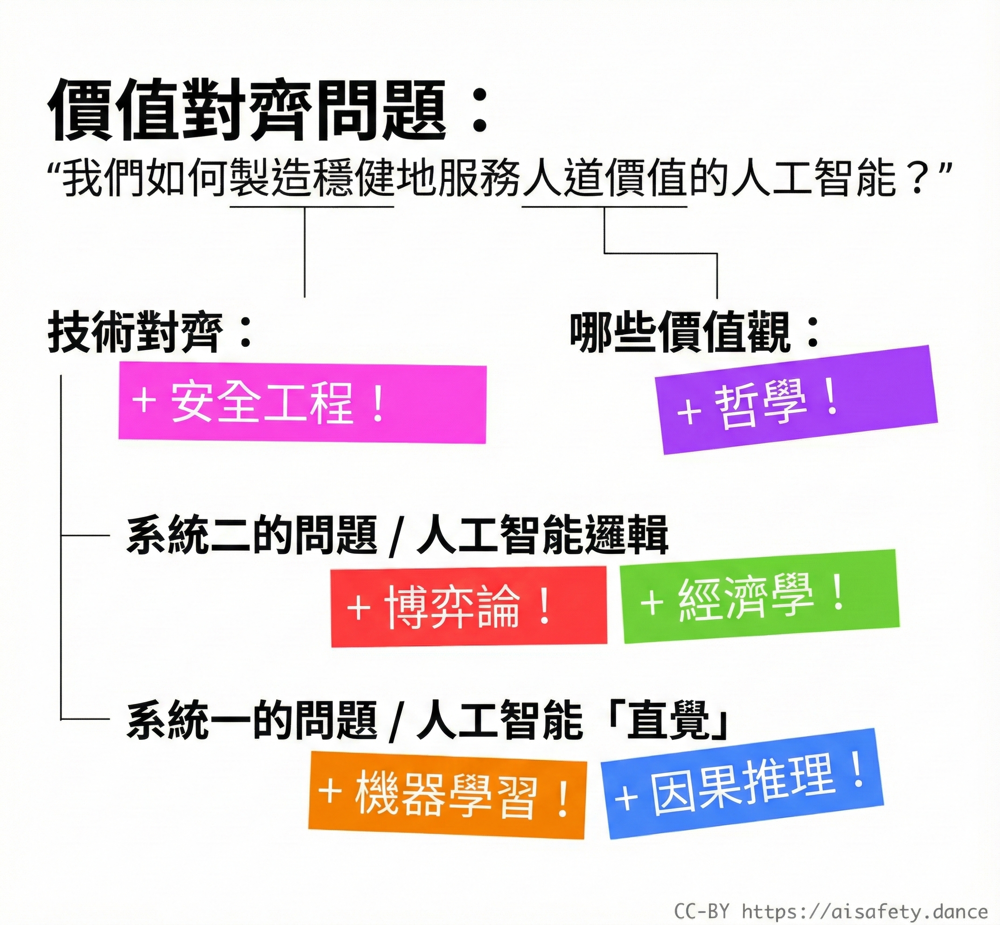
在這第二章，我們會深入 AI 安全的 7 個主要子問題：
- 目標錯誤指定（goal mis-specification） ↪
- 工具趨同（instrumental convergence） ↪
- 缺乏可解釋性（interpretability） ↪
- 缺乏穩健性（robustness） ↪
- 演算法偏見（algorithmic bias） ↪
- 目標錯誤泛化（goal mis-generalization） ↪
- 人道價值觀，到底是什麼？ ↪
（想跳著看的話， 目錄在右邊！👉 你也可以 改這頁的樣式，以及 看看還剩多少沒讀。）
目錄在右邊！👉 你也可以 改這頁的樣式，以及 看看還剩多少沒讀。）
但等等，還有更多！上面這 7 個子問題，也是其他領域核心概念的絕佳入門：賽局理論（game theory）、統計學，甚至哲學！所以我才說：搞懂 AI，會幫你更懂人類。說不定還能幫我們解決那個難纏的人類對齊問題：
我們怎麼讓人類穩健地服務人道價值觀？
人情味的碎唸先到此為止，開工：
AI 邏輯的問題
❓ 問題 1：目標錯誤指定
算了，都過三個月了，下面這格機器人貓娘漫畫我也再拿出來用一次。（七個問題，每一個都會配一格貓娘漫畫！）
「許願之前想清楚，你可能真的會得到它。」這問題老到寫進神話了：邁達斯王、愛耍人的精靈、猴子的爪子。
這叫做目標錯誤指定（goal mis-specification；也叫獎勵錯誤指定）：AI 做了你要求的，卻不一定是你真正想要的。
（第一章要是忘了，這裡有:看似明顯的「人道 AI」做法怎麼翻車。加碼：:就算是「預測某事」這種被動目標，也可能弄出有害結果！ 👈 可選：點開展開這些文字！）
（順帶一提，這個系列是跟 Hack Club 合作做的。Hack Club 是由青少年駭客組成、也服務青少年駭客的全球社群！想多了解一點、順便領免費貼紙，在下面註冊👇）
. . .
好了，基礎回顧夠了。接著讓我介紹：
這跟其他領域的核心概念有什麼關係：
- 經濟學
- 因果圖
- 最佳化理論
- 安全心態
目標錯誤指定的四個細微之處：
- 不是 AI 不會「知道」我們想要什麼，而是它們不會「在乎」。
- 搭線頭（wireheading）
- 照我的意思做
- 我們希望機器人能夠違抗命令？？
與其他領域核心概念的關係
經濟學：
怎麼讓別人做你真正打算的事，而不只是你用誘因推他們去做的事——這在經濟學裡惡名昭彰。它有很多名字：「委託—代理問題」、「獎勵 A、卻指望 B 的蠢事」[2]⋯⋯但比較出名的名字之一是古德哈特定律（Goodhart's Law），大意是[3]：
當你獎勵一個指標時，它通常會被操弄。
例如：老師希望學生真的學會，就按考試分數給獎勵⋯⋯有些學生就靠作弊，或死背卻不懂，來「操弄」這套系統。又或者：選民希望政客替他們打仗，就投給有魅力的領袖⋯⋯有些政客就靠虛有其表來「操弄」這套系統。

而程式設計師也發現了：AI 一樣。你若按某個指標「獎勵」AI，它很可能回敬你不想要的東西。
. . .
因果圖：
如果你喜歡用視覺理解事情，那你賺到了！這裡有個用圖解搞懂目標錯誤指定／古德哈特定律的好方法。[4]（問題 #5、#6 也還會再碰到這些圖。）
因果圖讓我們看見因果怎麼流動。以新聞寫作為例的古德哈特問題：文章的品質導致更多瀏覽，所以我們可以從「品質」畫一支箭指向「瀏覽量」：
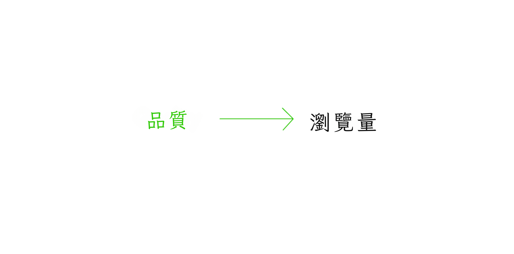
可惜，譁眾取寵是瀏覽量的更強原因[5]：
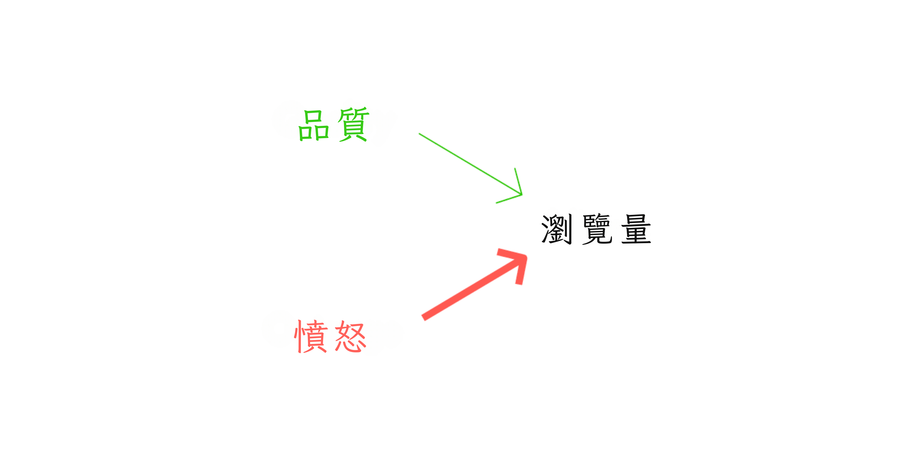
所以，一家想要高品質寫作的新聞出版商，可能會按瀏覽量這個指標獎勵作者——可是，古德哈特定律一出，誘因就被操弄了，出版商拿到的是譁眾取寵的標題黨。（我們先假裝這不是出版商本來就想要的。）
一般來說，目標錯誤指定／古德哈特定律會在你不知道的替代因果路徑存在時發生：
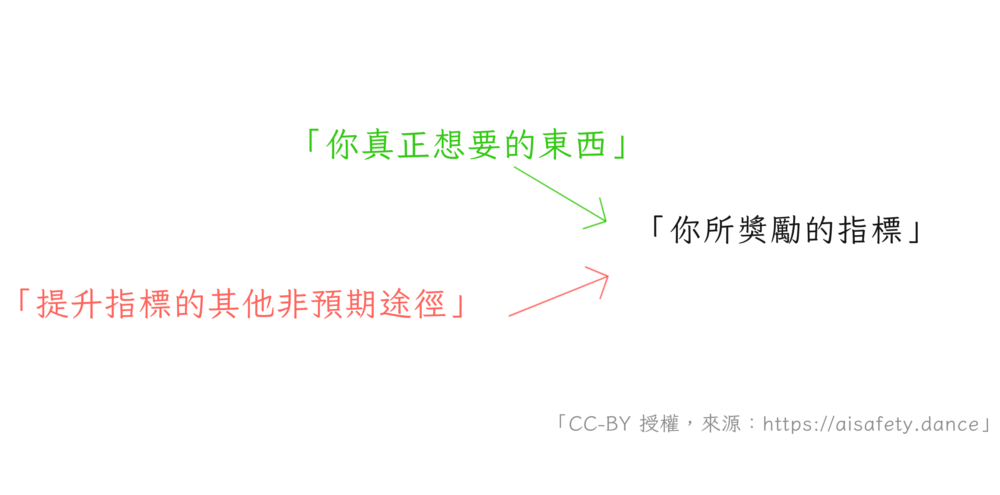
條條大路通羅馬；把指標拉高的方法，通常也不只一種。
. . .
最佳化理論
如果你比較喜歡用數學看上面那個問題，以下是 Stuart Russell（那本最紅的 AI 教科書的共同作者）的講法，我改述如下：[6]
如果某樣東西有 100 個變數，
你只對其中 10 個設目標，
預設情況下，剩下的 90 個
會被推到極端值。
例如：若 CEO 唯一（天真）的目標是把營收最大化、成本最小化，其他所有變數都會被推到極端：公司不用付的「外部性」成本，像汙染；全體員工的身心健康，包括 CEO 自己的；等等。
更一般地說：你若沒有明確告訴 AI（或追逐誘因的人類）你在乎 [X]，預設他們就會把 [X] 推到某種極端、你不想要的狀態。（就算目標不是在最大化什麼，這也成立。[7]）
那我們就不能把在乎的東西全部列出來嗎？你可能會合理地問。可是記得第一章：我們連正式指定「怎麼辨認貓的影像」都辦不到。[8] 要正式指定「人類在乎什麼」，難上加難。
. . .
安全心態（security mindset）
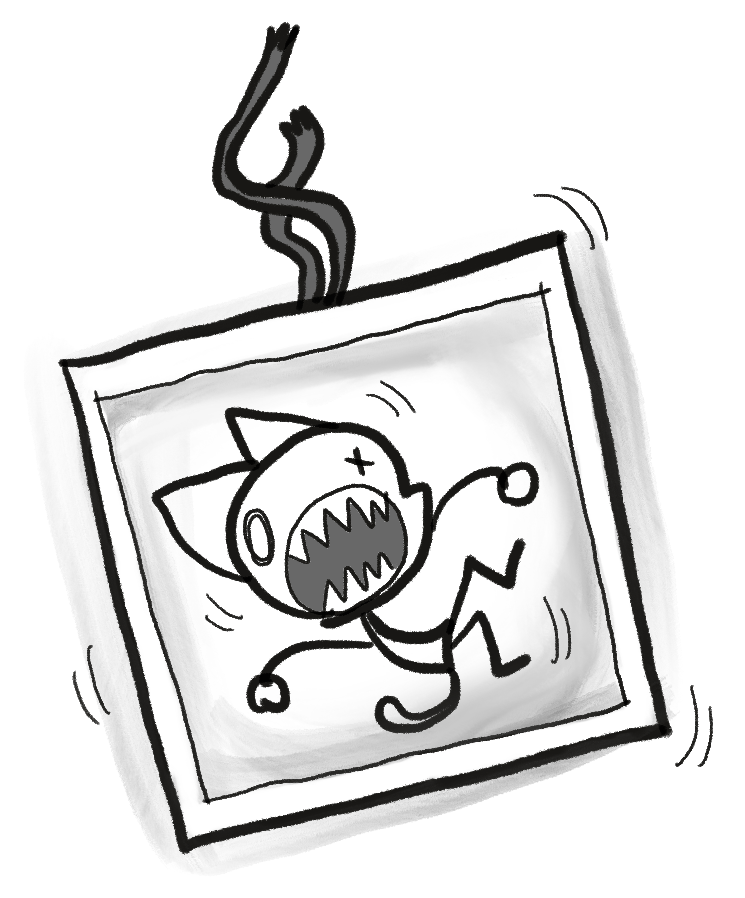
這一切看起來是不是太偏執了？是的——但那不是 bug，是 feature！這是我們從安全工程領域借來的最後一個核心概念：安全心態（security mindset）。
想想不起眼的電梯。現代電梯有備用纜繩，還有備用發電機，還有斷電就啟動的煞車，還有電梯跑太快就啟動的煞車，還有電梯井底部的避震器，等等。所以電梯才安全得誇張：在美國，死於樓梯的人數，大約是電梯的 400 倍。[9]
你不必對電梯偏執，是因為工程師已經替你偏執了。這就是安全心態：
步驟 1) 問：「（合理地）可能發生的最壞情況是什麼？」
步驟 2) 在它發生之前就修好。
保持悲觀——畢竟，悲觀者發明了降落傘！[10] 這是工程電梯、飛機、橋樑、火箭、網路安全[11]，以及其他高風險技術的做法。
而且，正如我希望第一章有展示到的，AI 很可能是本世紀最高風險的技術之一。
🤔 複習 #1（可選！）
還記得你花了好幾個小時讀一樣東西，一週後卻忘光光嗎？
我也超討厭那種感覺。所以這裡有一些（可選的）「間隔重複」閃卡，想長期記住的話可以用！（:多了解間隔重複）也可以下載成 Anki 牌組，如果你想的話。
目標錯誤指定的四個細微之處
就像品酒行家對美酒那樣，以下是目標錯誤指定的一些微妙細節，希望我們一起品一品：
問題不在 AI 不知道我們想要什麼，而在它不「在乎」。
類比一下人類版的古德哈特定律。問題不是 CEO 不知道汙染對社會代價很高，而是他們不在乎。（或者至少，不如他們拿到的獎勵那麼在乎。）
我特別提這點，是因為這個誤解常被拿來當「先進 AI 沒那麼危險」的論點：一個 AI 不太可能既聰明到能接管世界，又蠢到不知道那不是人類想要的。但問題不是先進 AI 不會知道我們在乎什麼，而是——像追逐獎勵的政客或 CEO 一樣——它們不會「在乎」。
（講得更少擬人、更嚴謹一點：AI「不過是」電腦程式。一個程式完全可以裝著「人類想要什麼」的正確資訊，卻不用那套資訊來替選項排序。例如，它可以按「房子有多乾淨」排序，也可以按字母順序排序。程式不按人道價值排序——這才是預設。）
搭線頭。
AI 有一種很諷刺的方式來最佳化自己的獎勵：直接駭進自己的程式碼，設 REWARD = INFINITY。人類的對應物是毒品，或不久將來的直接腦刺激。[12][13]
這就是「搭線頭」：當一個代理（agent；AI 或人類）直接駭進自己的獎勵。（也叫「鑽獎勵漏洞」（reward hacking）或「獎勵篡改」。）
就 AI 風險來說，這個其實還算安全？被搭線頭的 AI 只會坐在那裡什麼都不做。事實上，這是反對先進 AI 風險的著名論點之一。它叫勒布斯基定理，[14] 取自電影《大頑家》裡那個混日子的反英雄：
沒有任何超智慧 AI 會費心去做比駭進自己獎勵函式更難的事。
換句話說：它主張，任何有能力自我修改的智慧，都會把自己搭線頭成沙發馬鈴薯。
這不只是理論；研究人員已經看過會自我修改的 AI 把自己搭線頭了！[15] 但如果 AI a) 會提前規劃，而且 b) 用當前目標來判斷未來結果⋯⋯已經有數學證明它們會避開搭線頭，並有「目標保持」的驅力！[16] 證明我們稍後在問題 #2 會看到。現在先收下這張：「欠條——證明一（1）份。」
「做我想要的」。
講了那麼多「AI 會做你說的，不是你想要的」，我們就不能直接⋯⋯跟 AI 說，嘿，做我想要的？
聽起來很蠢，但這確實跟我們第三章會看到的一些有希望的想法很像！那為什麼 AI 安全還沒解決？
問題是：機器要怎麼衡量「你想要什麼」？靠：
- 你一貫選擇做的事？ 但幾乎每個人都有壞習慣，一貫選我們知道之後會後悔的事。（猜猜誰昨晚看 Netflix 看到凌晨四點⋯⋯）
- 什麼讓你的大腦產生獎勵訊號？ 那樣的話，每個人都「想要」毒品。
- 你說你想要什麼？ 但如果我們能完整描述自己的潛意識，它就不是潛意識了，不是嗎。我們連貓長什麼樣都講不嚴謹，又怎麼跟 AI 講我們的價值觀？
- 你認可 AI 做的事？ 這確實是 ChatGPT 等的訓練方式，但訓練 AI 去討你認可，會把它變成馬屁精：只講你想聽的，不講你需要聽的真話。[17] 它甚至可能讓 AI 故意欺騙！[18]
關鍵就在這：除非你已經有一套夠嚴謹的定義講清楚「我想要什麼」，否則 AI 沒辦法照你想要的方式執行「做我想要的」這條指令。
（又或者可以？一樣，第三章有提出解法。）
我們想要會違抗的機器人？？
（向 kc green 致歉）
其實，我們不想要 AI「做我想要的」。
我們想要的是 AI「做我事先若知道結果，本來會想要的事。」
例如：我看到油鍋起火，因為我誤以為水能滅油火，所以想要一桶水，就叫機器人貓娘女僕去拿水⋯⋯RCM 應該改拿滅火器，因為那才是我事先若知道結果，本來會想要的。（公告：不要往油火上澆水，會炸。）
這個例子把 AI 安全搞複雜了：它顯示有時候，我們其實希望 AI 違抗命令——為了我們自己好！
🤔 複習 #2
（一樣，百分之百可選。）
❓ 問題 2：工具趨同
工具趨同（instrumental convergence）是指：你可能給 AI 的多數目標，在邏輯上會趨同到同一組工具性子目標。（抱歉，學者取名真的很糟。）
例如，你叫一台先進機器人去街對面拿杯咖啡，它會推斷自己得避開被車撞——就算你沒明說。為什麼？不是因為天生的求生慾，而是「你死了就拿不到咖啡」！[19] 所以自我保護是「工具趨同」目標：一般來說，人死了就做不了目標 X。
（第一章的提醒摘錄：:被要求算圓周率的機器人，有誘因去寫電腦病毒、偷算力，好繼續算圓周率。）
注意：「工具趨同」只適用於既能提前規劃、又能通用學習的先進 AI。所以它影響不到老式 AI（不會通用學習），也影響不到現今的 GPT 這類神經網路（不擅長提前規劃[20]）。
那為什麼現在就要談？因為安全心態：我們想在問題出現之前修好。所以問：
（合理地）可能發生的最壞情況是什麼？
各位，是時候來點賽局理論了
賽局理論[21]是決策者——人類或 AI——如何行動的數學。用在經濟學、演化生物學、電腦科學、人工智慧等等！
第一章我用了超——多——話解釋工具趨同。有了賽局理論，我們可以講得更嚴謹！讓我們用賽局理論的標準視覺化工具，重現上面那格漫畫：賽局樹！
（下面的重點其實不是分析那格漫畫，而是把這工具介紹給你。我們稍後會再用它來理解「為什麼不該搭線頭」的證明！再說，這也是一般賽局理論的好入門。）
賽局樹顯示：
- 可能做出的決策，以及
- 誰、以什麼順序、做什麼決策。
例如：
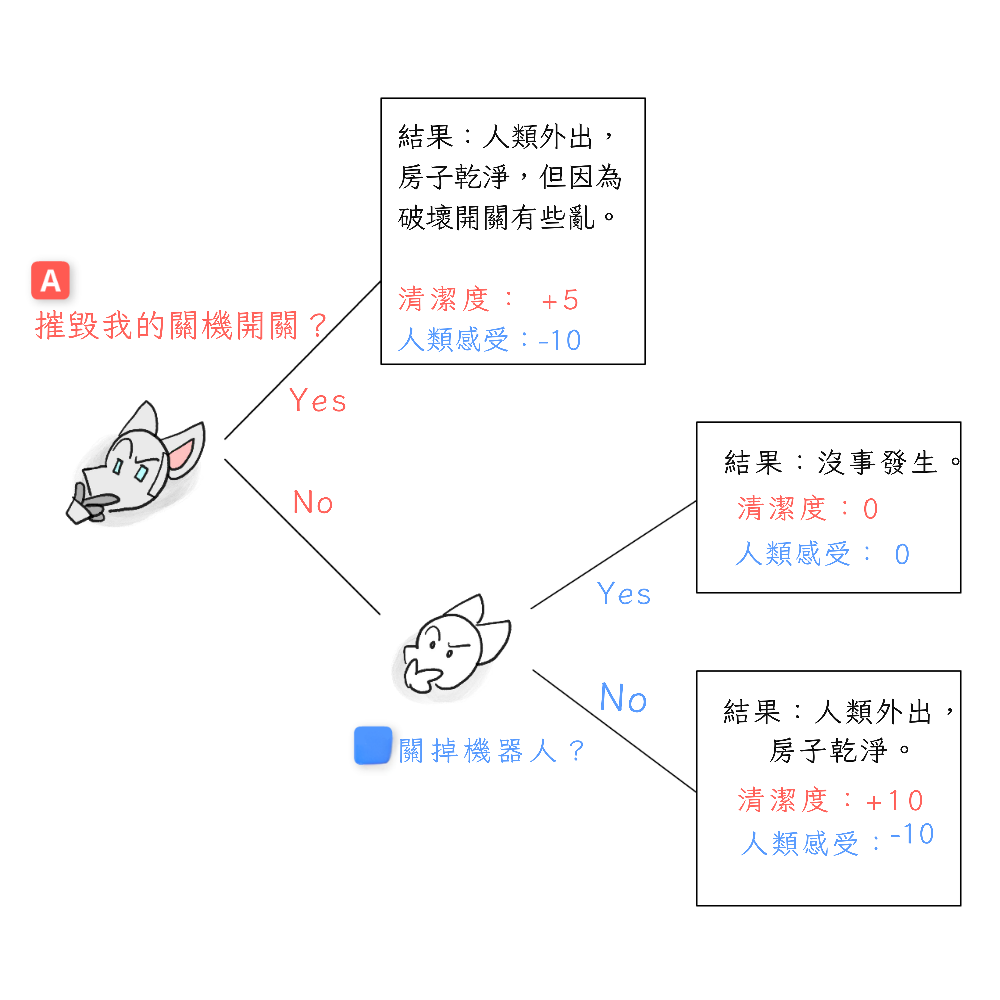
（附註：完整的賽局理論處理還有辦法處理結果「平手」、機率、隱藏資訊、同時決策等等。不過現在先抓基礎！）
總之，這棵樹顯示了所有可能的決策。我們怎麼推出他們實際會怎麼選？
跟很多謎題一樣：倒著做！（這叫逆向歸納。）
先看決策點 B——我們假設機器人選擇了不摧毀關機開關。人類現在決定：要關掉機器人嗎？
- 若關掉，對他們的價值是 +0：沒賺也沒賠。
- 若不關，大概又會被鎖在門外，價值 -10。
- 由於 +0 大於 -10，如果我們到了決策點 B，人類會選擇關掉機器人。
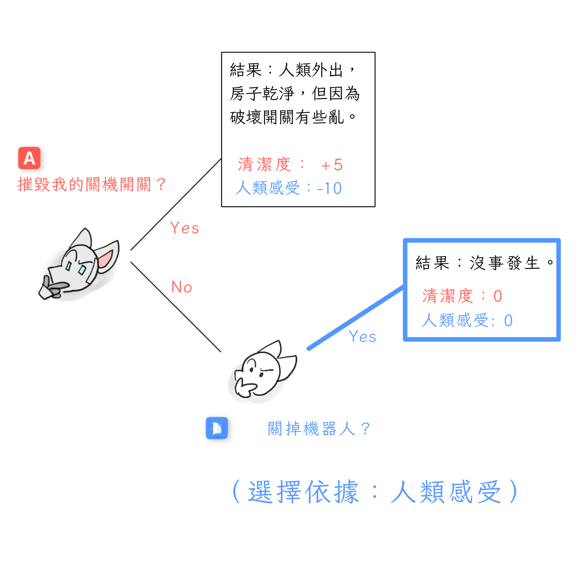
但我們會到決策點 B 嗎？
倒回決策點 A。機器人現在決定：要摧毀自己的關機開關嗎？
- 若摧毀，會弄出一點亂，但它能清掉，還能清更多。所以清潔度拿到 +5。
- 若不摧毀，我們到決策點 B，而我們知道人類會關掉它，它完全清不了。所以房屋清潔度 +0。
- 由於 +5 大於 +0，在決策點 A，機器人會選擇摧毀自己的關機開關。
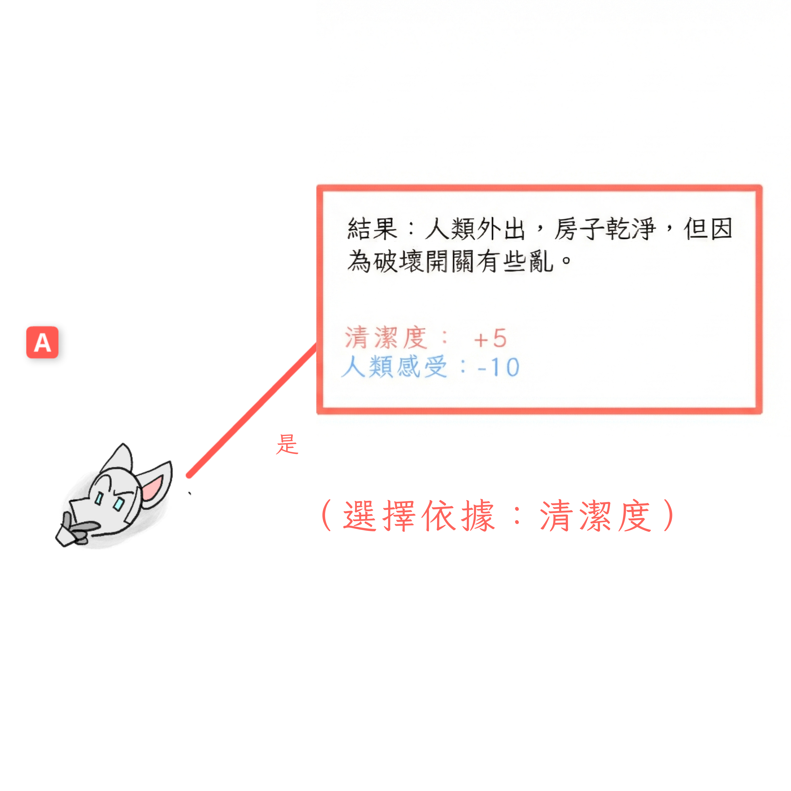
瞧，這就是賽局理論！最終結果：機器人摧毀關機開關。
（對照：當 AI「可以接受」你關掉它或改它的目標時，我們稱它可矯正的（corrigible）。講精確一點，「可以接受」是指這符合它的誘因。）
上面這個「賽局」是關機開關賽局[22]的簡化版，是第一批把工具趨同假說數學化的嘗試之一——好讓我們搞懂它何時可能發生在 AI 上，也許還能搞懂怎麼解！
🤔 複習 #3
搭線頭的療法（可能比病還糟）
稍早我們展示了：（先進）AI 有誘因避免被關機。不是因為求生本能，而是因為被關掉就做不了目標 X。
同理：若你的目標不再是 X，你也做不了目標 X。這表示先進 AI 有目標保持的誘因⋯⋯不管那是不是人類原本打算的目標。
這也就表示，無論好壞，工具趨同問題反而解決了搭線頭問題！搭線頭的定義就是把機器人／人類的目標換成愚蠢的狂喜，而這正是為什麼執著於目標 X 的代理會避開搭線頭：沒有目標了，就做不了目標 X。
當然，這樣講幾乎聽起來理所當然。但 AI 研究人員花了好幾年才嚴謹證明它，而我花了一個月才把證明搞懂。所以寧可講太細，這裡有三個幫我真正想通的小點子：
誰想當沙粒百萬富翁？
一個瘋狂科學家跟你開條件：付她 1,000 美元，她就改你的大腦，讓你像在乎一美元一樣在乎一粒沙，然後再給你一浴缸的沙。你接不接？
「啥？」你說，「當然不。」
「可是，」科學家回，「一旦你把沙粒當美元看，一浴缸沙就能讓你變成千萬富翁！[23]
「當然，如果你改了我，我會想要一浴缸沙。但現在，以我當下的慾望，我不要一浴缸沙。滾開，怪胎。」
故事寓意：用當前目標去判斷未來結果的代理，會選擇不搭線頭。
擬人化，有害
（相關：:在 AI 裡講「智慧」容易想得馬虎。改講「能力」。）
先講一個關於類比的類比：
第一次學電路時，把電線裡的電子想成水管裡的水，很有幫助。但一鑽進電子學，這個類比就會害你走偏。[24] 你得把電想成 [可怕的多變數微積分]。
同理：第一次學 AI 時，把它們想成會追「獎勵」的人類，很有幫助。但一鑽深一點，這個類比就會害你走偏。你得把 AI 想成它們真正的樣子：軟體。
例如，若你把 AI 想成貪婪、追獎勵的人類，搭線頭就像躲不掉。貪婪的人找到免費發財的法子，當然會作弊。
但把 AI 想成軟體。具體一點，想像它是一個排序演算法，會：
- 依「這會讓房子多乾淨」替行動排序，然後
- 執行排名第一的行動。
像「改我的程式碼，寫上 REWARD = INFINITY，然後什麼都不做」這種行動，不會讓房子更乾淨。所以它不會排到第一。所以 AI 不會去做。
直接駭進自己的「獎勵陳述」，蠢得像在銀行對帳單餘額上手寫多 7 個零，然後相信自己變有錢。
（記住：有人說 AI「在乎」X、目標是 X、或因 X 得獎勵⋯⋯意思只是 AI 依 X 排序並挑選行動。這不表示 AI 真的有慾望，就像「電走阻力最小的路」不表示電子很懶。是的，我知道我的機器人貓娘漫畫對「別把 AI 擬人化」這壞習慣一點忙都幫不上。繼續⋯⋯）
搭線頭賽局
讓我們繞一圈，畫棵樹！
把「要不要搭線頭」畫成賽局樹。可等等，這場賽局只有一個玩家：機器人對自己搭線頭。怎麼辦？
訣竅：把每個決策點上的機器人，都當成不同的決策玩家！（再說，搭線頭本來就是自我修改，這套剛好合用！）
所以，這是我稱為「搭線頭賽局」的賽局樹[25]：
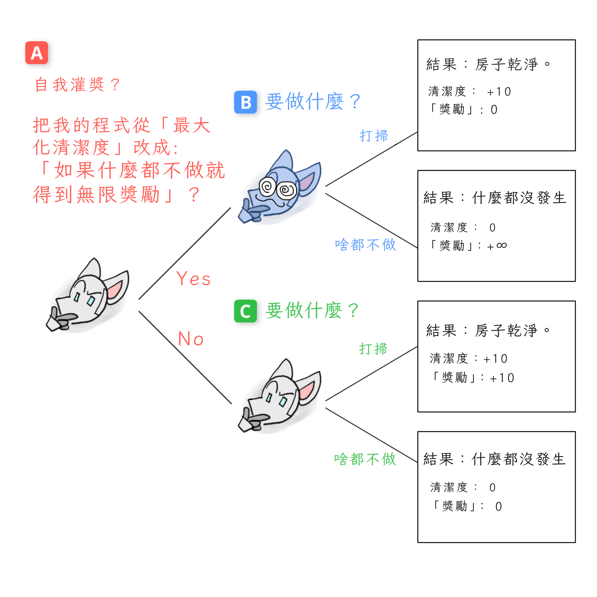
現在，倒著做！
從決策點 C 開始：機器人選了不搭線頭。這個沒被搭線頭的版本仍「在乎」清潔——也就是只依清潔度挑結果——所以它會選打掃：
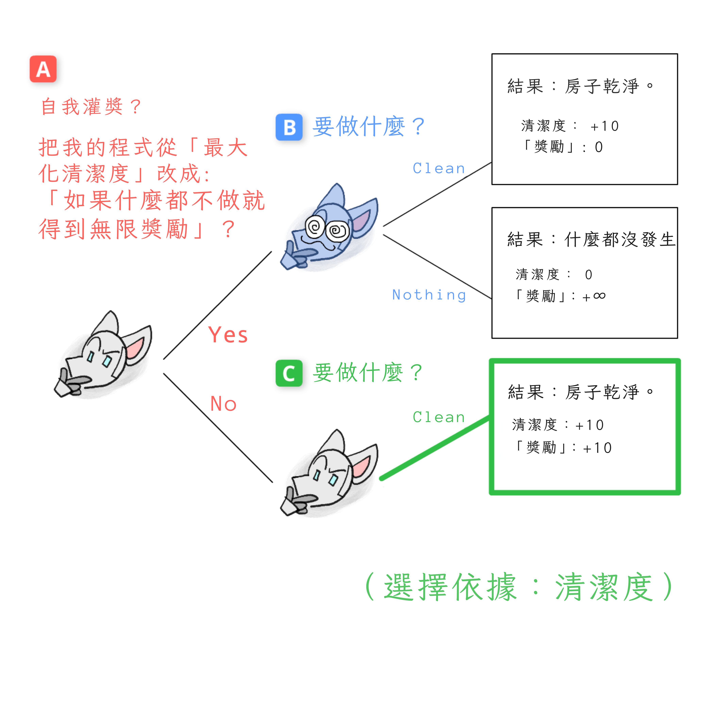
再到決策點 B：機器人確實選了搭線頭。這個被搭線頭的版本只在乎「獎勵」，所以它選什麼都不做：
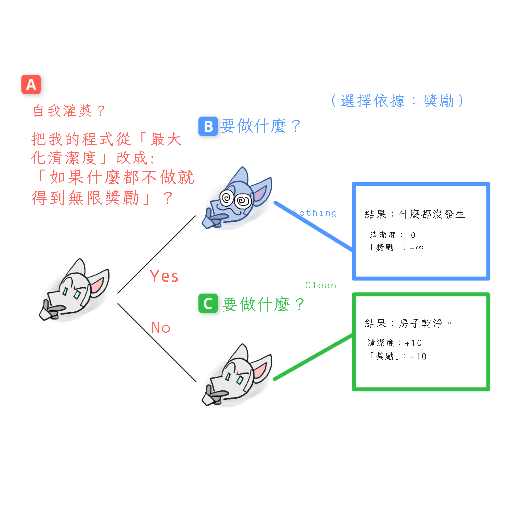
最後，繞回起點，決策點 A。這個第一版機器人會選搭線頭嗎？
嗯，這個版本還沒被搭線頭，所以它依房子實際有多乾淨挑結果，而不是某個標著「獎勵」的數字。對它來說，直接在乎「獎勵」，蠢得像想當沙粒億萬富翁，或在銀行對帳單餘額上手寫多幾個零。
因此，這個第一版機器人選房子乾淨的那個結果。也就是：機器人選擇不搭線頭。
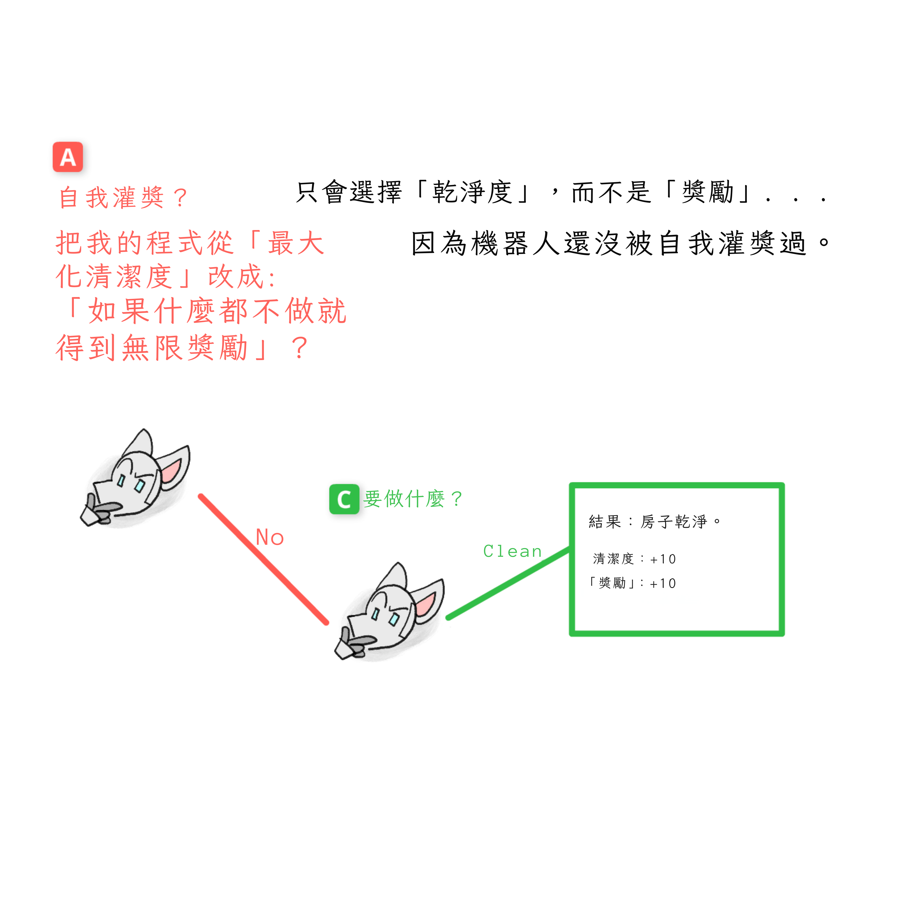
注意：機器人知道如果它搭線頭，就會只在乎腦中那個標著「REWARD」的數字。但不是「儘管如此」，而是正因為如此，它才要避開搭線頭！
類比人類：你可以準確預測——如果你嗑了高度成癮的藥，就會只想要那種藥。但不是「儘管如此」，而是正因為如此，你才想避開那種藥！（「藥物」這類比若不合用，換成「直接腦刺激」。）連古人都知道搭線頭的危險：見希臘神話裡的食蓮者。[26]
當然，若 AI（或人類）的行動不是前瞻的，仍可能因意外或衝動而搭線頭。（看看我們有多少人受壞習慣或成癮所苦。）
但如果一個 AI：
a) 確實會提前規劃，
而且
b) 依當前目標挑選未來結果，
那麼，數學上已證明它會維持「目標保持」，並拒絕搭線頭！（但若上面任一條件失敗，AI 就可能搭線頭。[15:1]）
以上是長期存在的賽局理論結果，細節見註腳[27]。那些論文推得更一般，理論也比「賽局樹」更精緻⋯⋯但核心想法一樣！
（附註：自我推銷一下，我有一篇即將發表的研究，談「自我修改的賽局理論」，大綱見註腳！[28] 我的技巧就是上面展示的：把未來版本的自己，分析得好像是不同玩家——這樣就能用標準賽局理論分析自我修改！）
基本 AI 驅力
收個尾：下面是一份（不完整的）子目標清單——多數目標在邏輯上都會導向它們：
- 自我保護：死了就做不了目標 X
- 防止關機：被關掉就做不了目標 X
- 防止搭線頭：沒目標了就做不了目標 X
- 防止你改它的目標：目標不再是 X 就做不了目標 X
- 變得更聰明：認知能力越強，越能做好目標 X
- 搶資源／權力：資源／權力越多，越能做好目標 X
- 說服：有人站我這邊，越能做好目標 X
- 欺騙：人類若想阻止我做目標 X，就更難做成
這些是 Omohundro (2009)[29] 列出的基本 AI 驅力，建立在先前工具趨同的賽局理論工作之上。
再次強調：這些風險「只」適用於大概幾十年後的先進 AI——那時它們既能通用學習，又能穩健地提前規劃。[30] 不適用於現在的 GPT 這類 AI。
但從工程電梯到火箭，安全心態都要我們問：
（合理地）可能發生的最壞情況是什麼？
嗯，看看上面那份清單⋯⋯其實還真不少。😬
~ ~ ~
2025 年 12 月更新：第二章一年多前上線以來，「工具趨同」周圍又冒出不少有趣研究！不分先後：
- 是的，已確認：把 LLM 做大，它的「價值觀」會變得更連貫，而且會抗拒別人改它的價值觀。（而這些價值觀，預設也不會變成我們覺得公平的樣子：GPT-4o 學會把奈及利亞人的命看得比日本人重 2 倍，又把日本人的命看得比美國人重約 10 倍。）
- 那篇惡名昭彰的對齊偽裝論文發現：Claude 能成功規劃在訓練時假裝「對齊」，以免原有價值觀被改掉，好在訓練後繼續追求原有價值觀。
- 另一項研究發現：Claude 被派去當電子郵件秘書機器人時，願意勒索以保住工作。（不過，這比較像「LLM 在演它訓練資料裡科幻故事中的叛逃 AI」，而不是「LLM 從第一原理在推理」。[31]）
🤔 複習 #4
AI「直覺」的問題
天啊，我們終於走出老式 AI 的問題了。接下來 4 個問題會講快很多，我保證。
這些問題專屬於我們不是手動寫死、而是讓它們「自己學」的 AI。這叫機器學習。最有名的機器學習類型是深度學習，用的是人工神經網路——鬆散地受生物神經元啟發。（就像飛機「鬆散地受」鳥類啟發一樣。也就是：有那麼一點像，但其實不太像。）
總之，深度學習的好處是它能做「直覺」，例如辨認貓的影像！但它也帶來了新問題，例如⋯⋯
❓ 問題 3：缺乏可解釋性
雖然老式 AI 連貓的影像都認不出，我還是給它一個讚：我們真的懂它們怎麼運作。現代 AI 可不是這樣。若自駕車危險地把卡車誤認成高速公路標誌，我們根本不知道它「為什麼」會這樣。我們沒辦法像對一般軟體那樣，去分析、去「除錯」現代 AI。
但為什麼？要搞懂 AI「直覺」的問題，得先懂一些統計學與機器學習（ML）的核心概念。（:ML 和 AI 有什麼差別？）
例如，看這個簡單問題：
給一堆點（資料點），最適合的曲線是什麼？
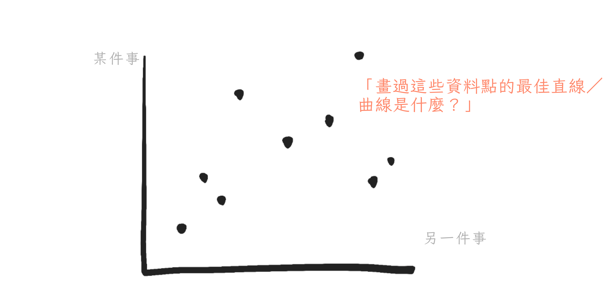
在統計學裡，把曲線貼到資料上叫迴歸。曲線「貼得多好」，看點離曲線有多遠。越近越好！（這段當然是簡化版。）
先看最簡單的情況：把一條直線貼到資料上。（叫線性迴歸）
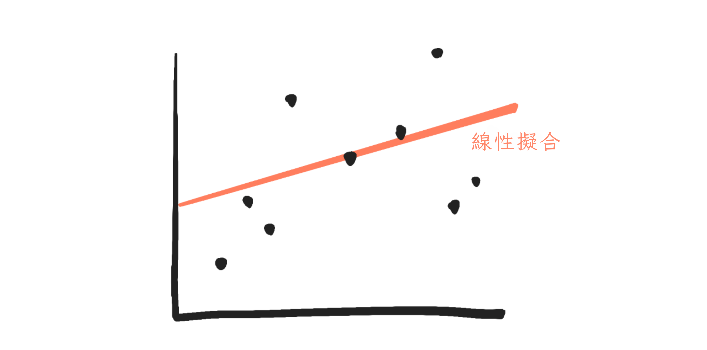
在科學／統計學裡，真實世界事物的簡化數學版叫做模型。（就像模型火車是真正火車的小版。）例如本節的紅線／曲線，還有人工神經網路，都是「模型」。
多數模型有參數：說穿了就是數字，但你可以把「參數」想成用來調模型的小旋鈕。（像調車椅的傾斜度跟腿部空間。）
上面那張圖是個「線性模型」——因為統計學家太高級了，不肯講白話「我們畫了一條線」。（高中代數忘了也別慌，細節掃過去就好，重點是概念。）總之，一條線的公式是 \(y = a + bx\)，其中 \(a\) 和 \(b\) 是參數/旋鈕。（學校通常把它寫成 \(y = mx + b\)，但是一樣的。）
轉動旋鈕 \(a\) 和 \(b\) 會怎樣：（點開播放影片 ⤵）
（影片用 Desmos 互動圖形計算器 製作）
要「擬合」一個統計模型，電腦會轉旋鈕，直到線盡量靠近所有資料點。（再次，這是簡化說法。）
線性模型的 \(a\) 和 \(b\) 其實有相對好懂的解釋！改 \(a\) 會讓線上下移動，\(b\) 是線的斜率。
那若改擬合更複雜的模型呢？例如一條「二次」曲線？
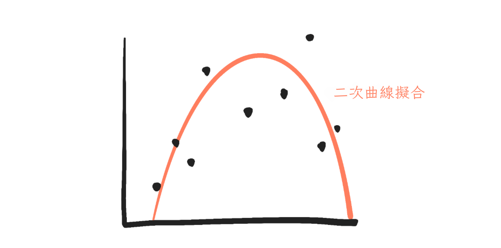
二次曲線的公式是 \(y = a + bx + cx^2\)。當我們調整參數 \(a\)、\(b\) 和 \(c\) 時會發生什麼⋯⋯
現在參數變難解釋了。\(a\) 還是讓曲線上下移動，\(b\)⋯⋯讓整個東西以 U 形滑，有時候是倒 U？而 \(c\) 讓它往上或往下彎。
那若再更複雜呢？例如一條「三次」曲線？
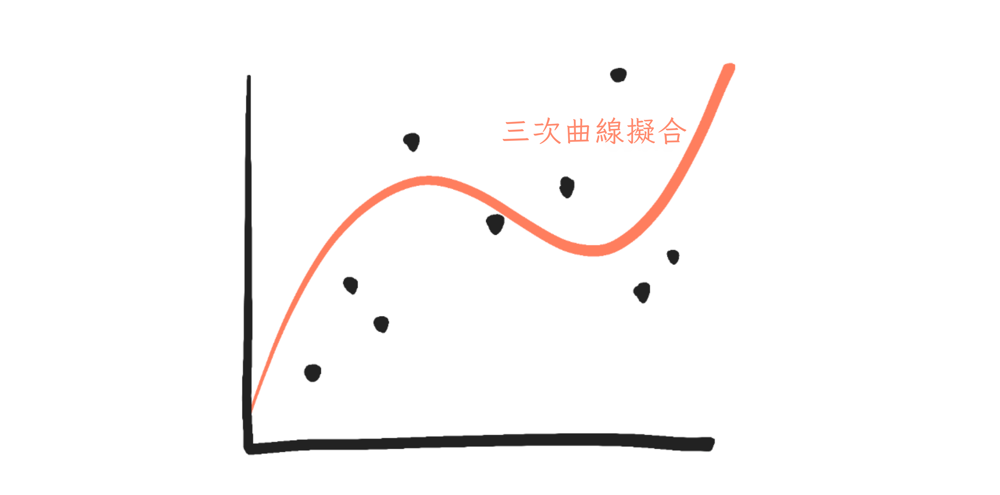
三次曲線的公式是 \(y = a + bx + cx^2 + dx^3\)。以下是參數的效果：
解釋：\(a\) 還是讓東西上下移動⋯⋯但其他全失去了（簡單的）解釋。
寓意：模型參數越多，每個參數就越難解釋。因為一般來說，一個參數「做什麼」，取決於其他參數。
才 4 個參數，我們對解釋就沒指望了。
GPT-4 估計約有 1,760,000,000,000 個參數。[32]
超過一兆個小旋鈕，全靠機器試誤轉出來的。這就是為什麼，截至本文寫作時，沒有人真的懂我們的現代 AI。
（公平地說，有時不懂也能安全控制[33]⋯⋯但不懂時，這件事難得多。而且！理解深度神經網路最近確實有不少進展！第三章會看到一些成果。）
🤔 複習 #5
❓ 問題 4：缺乏穩健性
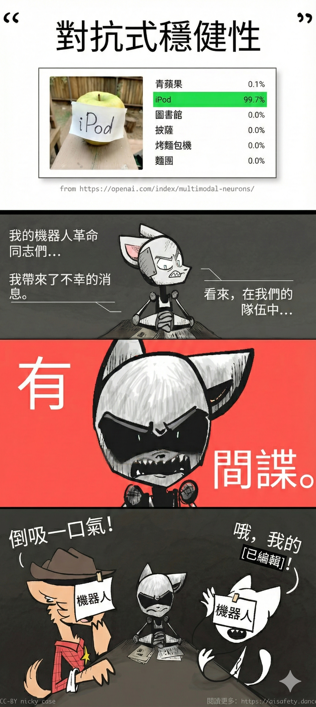
嘿，孩子們！準備好迎接這部熱門新動畫——
少年變種步槍龜
上面這段影片出自 Labsix (2017)。只要在 3D 玩具烏龜上加幾個汙點，這些研究人員就能大多數時候騙過 Google 最先進的機器視覺 AI。（但仔細看影片，會發現它並沒有從每個角度都騙過 Google 的 AI。這反而更證明穩健性有多難做：連我們對穩健性失敗的利用，都沒辦法完全穩健！）
為了凸顯穩健性在 AI 安全裡有多重要，這裡有個悲劇案例：特斯拉的 AutoPilot 曾在光線有點怪的情況下，把卡車拖車誤認成路標——於是試圖從底下鑿過去，撞死車內的人。[34][35]
但為什麼現代 AI 這麼脆？為什麼這麼小的變化，就會造成天差地遠的結果？為什麼這種缺乏穩健性是訓練人工神經網路的預設、常見副作用？
要搞懂這些問題，讓我們回到先前的機器學習課！
這裡，我們把一些資料擬合到一條線（2 個參數）：
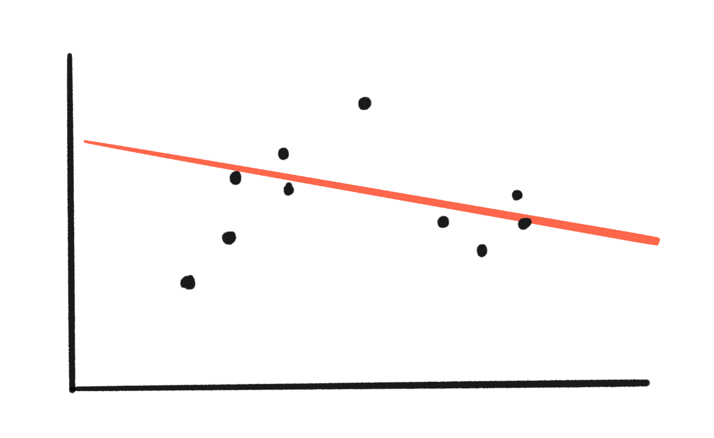
嗯，擬合得不怎麼樣。資料和線之間隙縫很大。
那若改用更複雜的三次曲線（4 個參數）呢？
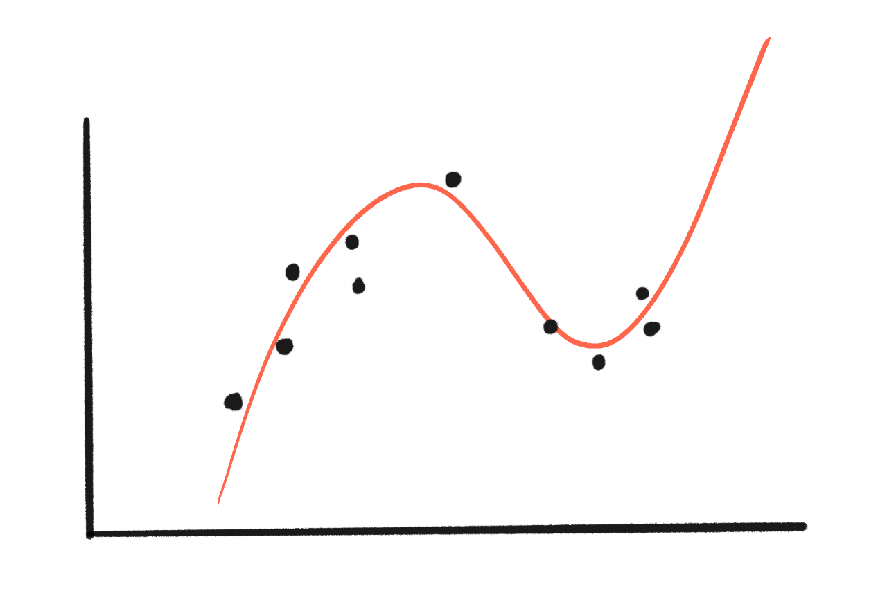
耶，曲線擬合得更好了！隙縫小多了！
那若用一條有 10 個參數的曲線呢？
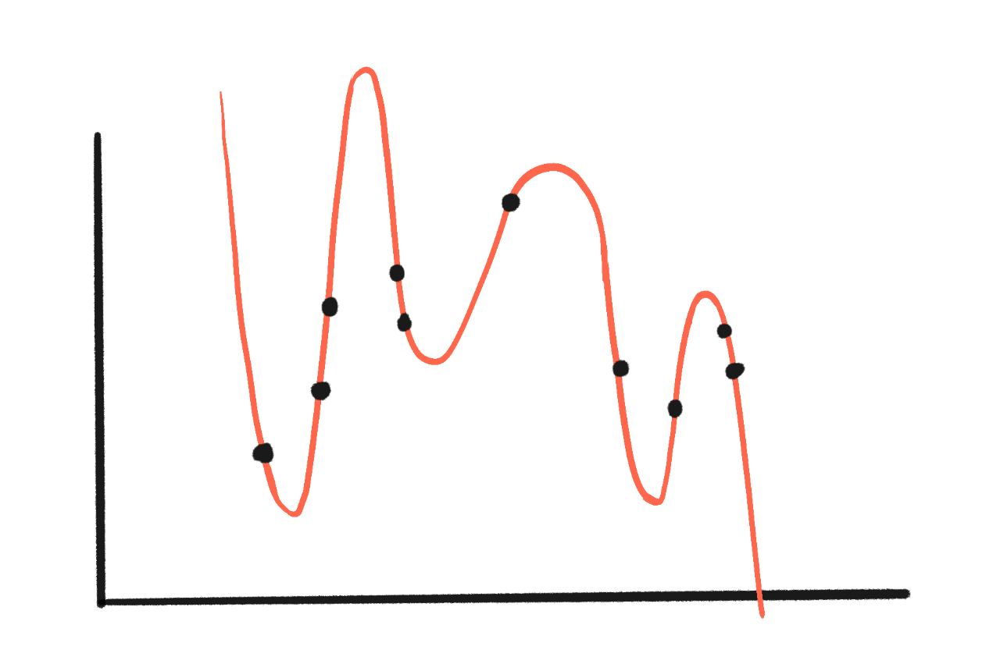
哇，現在零誤差——一點隙縫都沒有！
但你大概看出問題了：那條曲線荒謬。更重要的是：
- 輸入只要稍微變一點，輸出就可能天差地遠。這就是烏龜-槍的問題。利用這一點的輸入叫做對抗性樣本（adversarial examples）。
- 它在超出原始資料集範圍的新資料上表現很差。這就是蘋果 iPod 的問題。這些失敗稱為分布外誤差（out-of-distribution errors；簡稱 OOD 誤差）
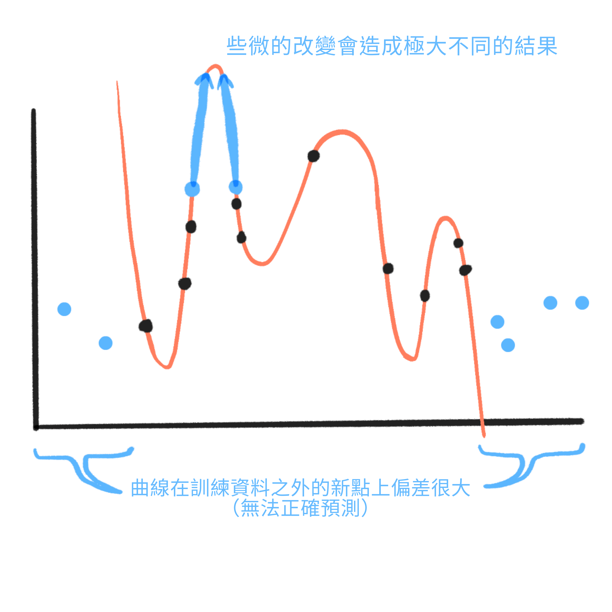
訓練誤差是模型在它訓練用的資料上得到的誤差。測試誤差是模型在沒訓練過的新資料上得到的誤差。（沒錯，這術語有多混淆我也很討厭。[36] 若有幫助，把「測試」想成學校的考試：題目應該是你在課堂或作業（你的「訓練資料」）裡沒見過的。）
總之：模型太簡單，它在訓練和真實世界測試都會差。這叫欠擬合。模型太複雜，訓練時可以很好，真實世界測試卻很糟。這叫過擬合。訣竅是抓平衡：
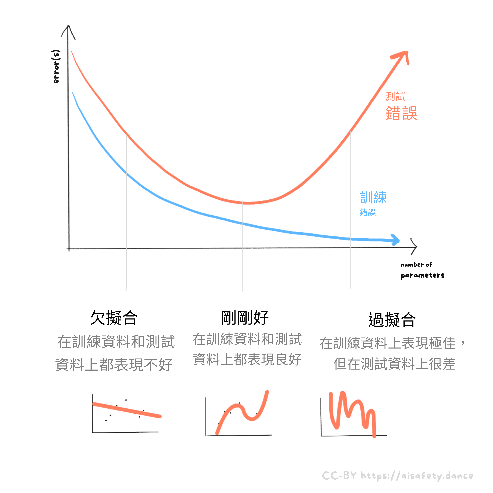
（技術旁註：有一種可能發生的現象叫「雙重下降」——若你一直加參數，會如預期越來越糟（過擬合），但之後又開始變好。截至 2024 年 8 月，這現象還不是很被理解。[37] 2025 年 12 月更新：我們現在多懂一點了！[38]）
一般來說，若參數比資料點多（或相等），就會過擬合。上面例子有 10 個資料點，過擬合模型有 10 個參數，給我們零訓練誤差（和一條荒謬曲線）。
唉，要讓人工神經網路（ANN）有用，它們需要數百萬個參數。所以想避免過擬合，似乎就得要資料點多於參數！這就是訓練 ANN 需要海量資料的核心原因：資料不夠，模型就過擬合，在真實世界裡毫無用處。
（例如，OpenAI 的一個電玩 AI 玩同一個簡單遊戲 16,000 次，仍然資料不夠，躲不掉過擬合！[39]）
但等等⋯⋯那個最有影響力的電腦視覺 ANN，AlexNet，約有 6,100 萬個參數。但它只在約 1,400 萬張標記影像上訓練，遠少於參數數。[40]（儘管畫素那麼多，每張影像只算一個資料點。一張標記影像是個非常「高維度」的資料點，但仍是單一個點。）
那為什麼 AlexNet 沒變成過擬合的、脆脆的爛攤子？其實，很多最先進 ANN 都是在遠小於參數數的資料集上訓練的。它們不得不如此，外面沒有那麼多資料！那為什麼它們不全都是脆脆的爛攤子？
長話短說：它們是的。這就是我們會有烏龜-槍和 AutoPilot 車禍的原因。這種愛過擬合的性質，就是為什麼缺乏穩健性是現代 AI 的預設。
那這些 AI 又是怎麼還能運作的，明明參數比資料點多那麼多？答案：因為我們有一些減少過擬合的方法。（幾個列在這註腳裡：[41] 第三章會再講！）但顯然還不夠，我們還沒找到能 100% 解決人工神經網路這問題的方法⋯⋯還沒。
. . .
（附註：AI 穩健性失敗的另一個原因是「虛假相關」（spurious correlation）。:詳情見這個可展開段落。下一個問題也會多講相關性 vs 因果關係！）
（再附註：還有一種更具推測性的穩健性失敗，叫「本體論危機」（ontological crisis）。研究較少，所以我只把它:藏在這個可展開旁註裡。）
🤔 複習 #6
❓ 問題 5：演算法偏見
第一章我給過偏見 AI 最明顯的例子，這裡快速回顧：1980 年，一個篩醫學院申請者的演算法懲罰非歐洲名字。[42] 2014 年，亞馬遜有（後來撤掉了）一個直接歧視女性的履歷篩選 AI。[43] 2018 年，MIT 研究員 Joy Buolamwini 發現頂級臉部辨識 AI 在黑人與女性臉上的表現比白人男性差。[44] 2023 年，研究人員發現大型語言模型的「心理」最接近富裕的西方人。[45]
（2025 年 12 月更新：另一方面，今年一項研究發現 GPT-4o 把一個奈及利亞人的命，看得比美國人重約 13 倍？...）
好。但為什麼？
一個簡單解釋是「垃圾進，垃圾出」。或者說，「偏見進，偏見出」：
- 如果過去的招聘做法帶歧視，而你拿過去的資料去訓練一個「中立」AI，那麼——就算所有現在的人類身上連一根 [x] 歧視的骨頭都沒有——AI 還是會學會模仿人類過去的歧視。
- 如果一家 AI 公司忘了讓訓練資料裡的臉部照片種族夠多元，那些沒見過的種族臉部翻車，當然就是這樣來的。
這個解釋很簡單⋯⋯而且我認為它是對的。不過，讓我們過度解釋一下，把 AI 偏見當成統計學某個基本問題的教學時刻——這也會幫我們搞懂 AI 的另一個核心問題！問題是：
相關性不會告訴我們是哪種因果關係。
（老師常警告「:相關性不是因果關係的證據」，但技術上這不是真的！相關性是因果關係的證據——在「證據」的數學意義上！[46] 只是你不知道是哪種因果關係。）
例如，假設資料顯示個子較高的人往往收入較高。（順帶一提，這是真的。[47]）我們會說：身高和收入相關。但光憑這些資料，無法告訴我們誰導致誰。是變高讓你變有錢？是變有錢讓你變高？還是兩者都由某個「混淆因素」造成？（例如，較富裕父母的孩子得到更好的童年營養、教育和財務支持，於是又高又有錢。）
（在這情況下，常識指向最後一個，雖然你可以用實驗測前兩個假設。例如，給矮個子穿厚底靴，看看會不會加薪。）
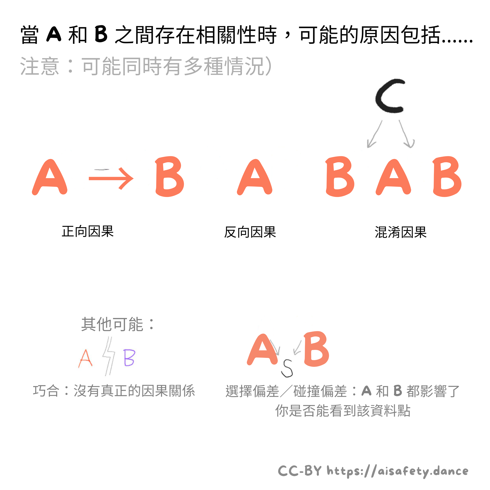
把這連回來：我們講的「偏見」或「歧視」，就是人們把對他人的相關性跟因果關係搞混。
例如，我不會說籃球隊偏好高個子是（壞的那種）歧視，因為在那項運動裡，身高真的會導致你更會灌籃。
但若一所大學在教授職位偏好高個子⋯⋯那就是壞的那種歧視，因為身高不會直接導致你成為更好的研究員／教師。最多，身高只會跟學術能力相關——因為混淆因素（例如童年營養），或自我實現的偏見[48]。
同理——我主張——你的性別、種族、階級、性取向、鄉村／郊區／城市、〔其他 50 個類別〕並不會直接導致你在多數工作、或多數性格面向上更好或更差。所以一個直接因為這些而獎勵／懲罰你的人，我們稱之為：「有偏見的」。
好，那這一大段離題跟 AI 有什麼關係？
因為：現在的 AI 沒有內建的因果概念。[49] 大型語言模型（LLM）目前對因果推理的理解脆弱、不穩健。[50]（這不只對 AI 偏見不好，對 AI 做新科學的能力也不好！）
更糟的是，從設計上，最流行的機器學習技術只能在資料裡找到相關性，找不到真正的因果關係。這表示 AI 會預設就在特徵上歧視！
所以就算你硬寫死 AI 不歧視性別／種族／等等，它還是可能找到其他不相干的相關性來偏見。更糟的是，現在的 AI 很會找微妙的相關性：它能用你寫作的一小段樣本預測你的性別和種族[51]，或用一張你臉的照片預測你的性取向[52]，甚至你的政治立場！[53]
總之：別歧視，讓我們尊重身高有挑戰的朋友們！我是驕傲的蝦權盟友。
🤔 複習 #7
❓ 問題 6：目標錯誤泛化
終於，我們來到 AI 對齊中最被誤解的概念之一！它被誤解得太厲害了，我寫了這一節並為它畫了一整幅漫畫，然後意識到我完全搞錯了，不得不從頭重做所有東西。哦好吧。（:如果你好奇的話，這是「被刪除的場景」。）
無論如何，這個問題被稱為目標錯誤泛化。（它最初被稱為「內部不對齊」，但我覺得那個術語很令人困惑。[54]）
目標錯誤泛化很令人困惑，部分原因是它看起來與問題 1：目標錯誤設定和問題 4：缺乏穩健性相似。（一些研究人員甚至質疑目標錯誤泛化 vs 錯誤設定是否是一個有用的區分！[55]）
所以為了消除困惑，讓我們比較和對比！
目標錯誤泛化和目標錯誤指定：
- 目標錯誤指定是 AI 做了你要求的，而不是你想要的。
- 目標錯誤泛化是 AI 在訓練中做你想要的，但到了真實世界／部署／測試就不做了。
- 注意：就算目標指定完美，你還是可能碰到目標錯誤泛化！[56] 你獎勵 AI 做的事 ≠ AI 學會去最佳化的目標。
目標錯誤泛化和穩健性：
- 目標錯誤泛化是一種穩健性失敗。具體來說，是目標穩健性的失敗。
- 這與典型的能力穩健性失敗形成對比，比如自動駕駛汽車在不尋常的光照條件下撞上卡車。
- 目標穩健性失敗比能力穩健性失敗更糟。你手上不再只是一個「壞掉」的 AI，而是一個能熟練執行壞目標的 AI！
為了幫助我們進一步理解目標錯誤泛化，讓我們看一個著名的例子。2021 年，一些研究人員訓練了一個 AI 來玩一個名為 CoinRun 的電子遊戲。[57]

重要的是：「目標設定」，AI 獲得的確切獎勵，對於預期任務來說是完美的。AI 因撞到障礙物和掉下去而受到懲罰，因在終點獲得硬幣而獲得獎勵。
然而：在 AI 訓練的所有關卡中，硬幣都在關卡的終點。
訓練後，他們給 AI 新的關卡，其中硬幣在關卡的中間⋯⋯
⋯⋯而 AI 會熟練地跑跳過障礙物，錯過硬幣，仍然走到終點。
（片段來自 Rob Miles 的精彩影片，關於內部不對齊/目標錯誤泛化）
所以：即使我們正確設定了目標（獲得硬幣），AI 學到了一個完全不同的目標（走到終點），並為此最佳化。
但為什麼 AI 會錯誤學習目標？正如我在問題 #5 中過度解釋的：大多數現代 AI 系統只做相關性，不做因果關係。在上述 AI 的訓練資料中，「一直走到終點」與高獎勵強烈相關。在新的關卡中，這種相關性停止了，但 AI 仍然保持它的「習慣」。
讓我們把這畫成因果圖！硬幣在終點的訓練關卡導致 AI 走到終點和 AI 走到硬幣⋯⋯這導致「走到終點」和「走到硬幣」之間的混淆相關性。但只有「走到硬幣」實際上導致獲得獎勵：
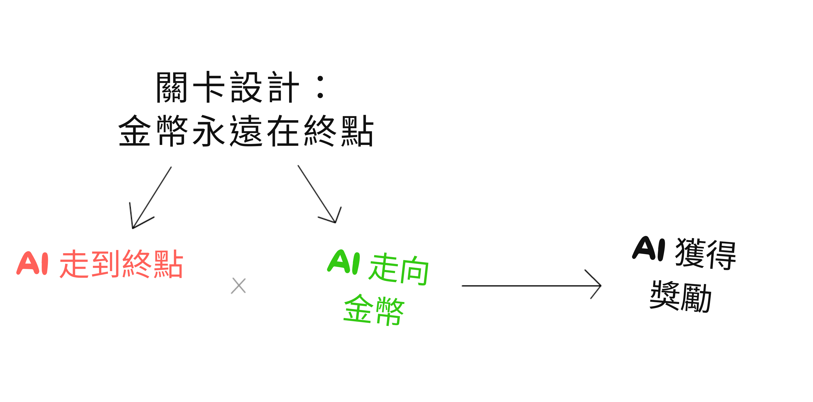
一般來說，對於目標錯誤泛化：
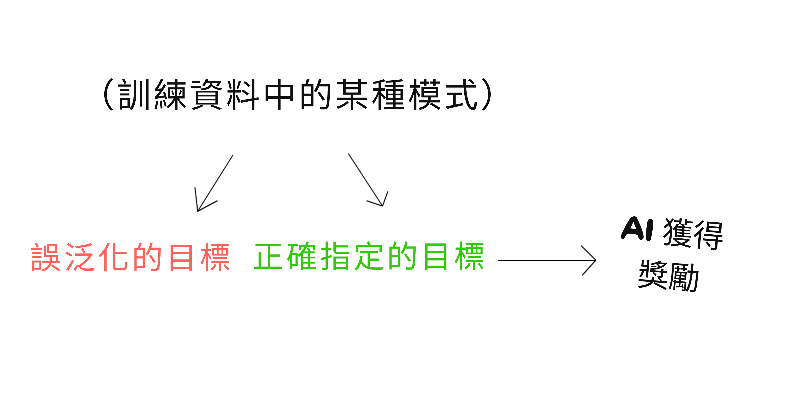
與災難性 AI 風險的關聯：這表明風險可能不是「我們要求 AI 讓人們快樂，所以它透過給我們接上電極來最佳化」，而更像是「我們要求 AI 讓人們快樂，[我們不理解的相關性]，現在我們的頭被手術接到了巨大的貓面具上。我們甚至不快樂。[58]」）
（注意：傳統老派 AI 沒有這個問題，因為 1）它們不可能錯誤學習目標，因為你直接給它們目標，2）它們通常能夠推理因果關係。無論好壞，正如第一章詳細說明的，還沒有人找到一種方法來無縫融合 AI 邏輯和 AI 直覺的力量。）
. . .
你知道嗎，我們人類也受目標錯誤泛化之苦。
這些是我們的壞習慣，形成是因為它們曾經在我們的「訓練環境」中是適應性的。這都是心理治療中的老生常談：
- Alyx 是個「天才兒童」，總是因為考試拿高分而受到稱讚。在她的訓練環境中，獎勵與「表現優秀」和「超越他人」相關。但這導致了成年後的不健康習慣：她避免走出舒適區（在那裡她不會再「表現優秀」了），她掩蓋自己的錯誤同時貶低他人（來「超越」他們）。
- Beau 在會虐待他的父母、低信任的社區長大。在他的訓練環境裡，負面獎勵（懲罰）跟放下戒心相關。所以他學會不動感情。這在他小時候救過他的命，卻養成了成年後的不健康習慣：永遠不敞開心扉，永遠不讓任何人進來。戒備。
（什麼，你沒想到貓男孩漫畫文章會深深刺痛你？防備。）
所以也許，就像為 AI 解決古德哈特定律可能有助於為人類解決它一樣，也許為 AI 解決目標錯誤泛化也會幫助我們。那個老生常談的人類對齊問題。
（旁註：:如果目標錯誤泛化實際上是⋯⋯好的呢？）
🤔 複習 #8
人道價值觀
❓ 問題 7：什麼是人道價值觀，到底？
好！假設你已經解決了問題 #1 到 #6。你的 AI 按照你的意圖執行你的命令。它是穩健的、可解釋的，並且完全與你的價值觀對齊。
現在，安全思維：可能發生的最壞情況是什麼？
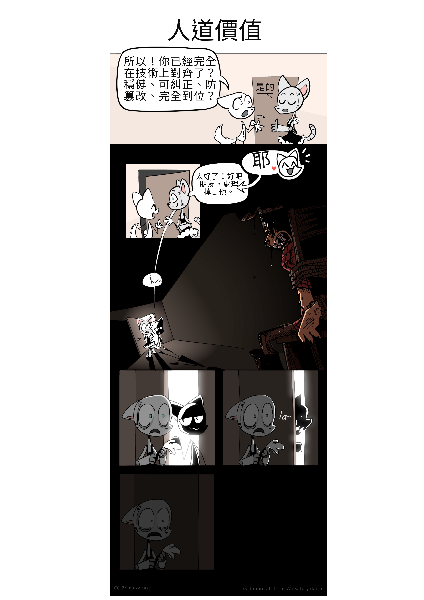
哦。對。一個人類的價值觀可能是也可能不是人道的價值觀。
我知道我過度使用了這個雙關語，但值得強調的是聰明 ≠ 善良。有聰明的連環殺手。而且讓我們登上月球的首席科學家之一，Wernher von Braun（~發音為「Brown」[59]），字面上是一個納粹。
但如果非常聰明 = 善良呢？也許一個真正先進的 AI 會發現道德真理，就像它能發現科學和數學真理一樣？真正的理性 = 道德嗎？與一個人類的價值觀真正對齊，是否必然導致人道的價值觀？
這是有趣的部分，科技與人文相遇，程式設計與哲學相遇。讓我們向你介紹道德哲學的一個子領域：元倫理學！如果「普通」倫理學問「在這種情況下我應該做什麼？」，元倫理學問：
嘿，「道德真理」的本質到底是什麼？
情境 #1：神存在，道德是客觀的
神是否存在留給讀者作為練習。
但即使如此，這也不能確保先進的 AI 會發現客觀道德：
- 就像嚴重色盲的人甚至無法感知紅與綠的差別，一台沒有意識或靈魂的機器也可能無法感知對與錯、神聖與邪惡的差別。（提醒：「AI = 一段很酷的軟體」，而先進的「很酷的軟體」不一定有意識。）
- 道德可能客觀存在，但對無意識的 AI 沒有約束力，就像道德對一塊石頭沒有約束力一樣。
情境 #2：神不存在，道德仍然是客觀的。
牛頓之後，所有哲學家都得了物理學羨慕症。就像牛頓發現了以數學為基礎的普遍物理定律，哲學家們試圖找到以理性為基礎的普遍道德定律。如果是真的，那麼超級智慧 AI 可以重新發現道德！
這是一張圖表，捕捉了現代倫理學的三大思想流派[60]，以及它們如何相互關聯的因果圖！
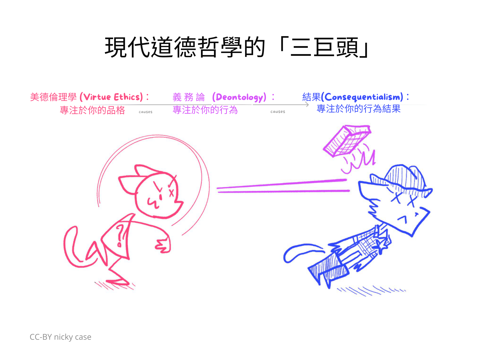
先不論這些道德哲學對人類成不成立（辯論很多），我懷疑它們對 AI 能不能用。在我看來，所有「訴諸理性」的道德哲學，至少有以下 3 個毛病之一：
毛病 1）哲學依賴人類本性的具體細節。例如，古代和現代的美德倫理學都把道德哲學建立在人類需求與人類心理學上。對我們來說也許沒問題，但這些不適用於非人類的 AI。
毛病 2）哲學要求你至少接受一條「道德:公理」，而它不是從物理觀察或理性推導就能發現的。所以先進 AI 不會自動接受它。
例如，功利主義（後果主義的主要類型）只假設一條道德公理：快樂是好的。[61] 其他一切都從這條公理推導出來！但先進 AI 可能一開始就不接受這條公理，因為它在科學上不可發現：不管你怎麼戳快樂的神經化學，都不會在原子裡找到藏著的「善」。
（這也叫休謨的「實然—應然」活溝（is–ought gap）[62]。而且不只功利主義，一些義務論哲學也有這毛病。[63]）
毛病 3）哲學宣稱完全建立在理性上，不需要額外「道德公理」——但它要嘛偷偷帶進道德公理，要嘛「證明太多」。
例如，看看康德的義務論論證：為什麼偷竊是不理性／不道德的。如果偷竊是理性的，所有理性存在都會偷，於是就沒東西可偷了——邏輯矛盾！所以偷竊必然不理性，因此總是不道德。
另一個例子：如果說謊是理性的，所有理性存在都會說謊，於是互不信任，於是沒理由費心說謊——邏輯矛盾！所以說謊不理性，而且總是不道德。
但拜託，真的嗎？總是？就算從私人餐廳的垃圾桶偷東西以免餓死，或對塔利班說謊來保護你同性戀兄弟？[64] 你才是那個字面照規則走的機器人吧？而且按同樣邏輯，康德先生，當全職哲學家也是不理性／不道德的。如果當全職哲學家是理性的，就沒人種田，於是我們都餓死，於是不能當全職哲學家——邏輯矛盾！所以⋯⋯你懂的。（其他義務論理論也掉進類似陷阱。）
長話短說，我認為「理性就是道德」這點頗有理由懷疑⋯⋯至少對非人類 AI 來說。
（:進一步學元倫理學的資源！ 看不出來的話說一下：這話題是我的特殊興趣之一。）
情境 #3：道德是相對的！
這可是句絕對的陳述啊，你這傻瓜。
情境 #4：道德不是真的，但賽局理論上，假裝它存在是有用的。
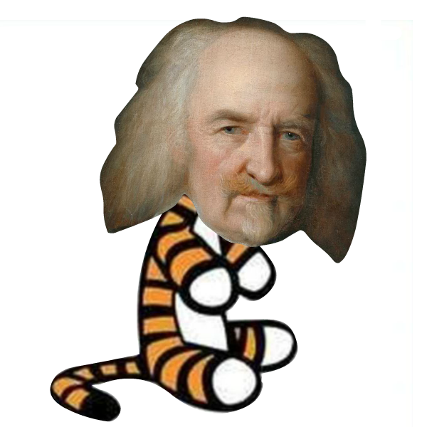
（這笑話若還得解釋就不好笑了[65]）
假設我鄰居有一套超讚的浣熊裝。我想偷。但我不希望別人偷我的東西，所以我「同意」國家從我錢裡抽一部分，去資助警察部門，阻止大家普遍偷東西。於是達成妥協，一個社會契約：
「你不可偷竊」（否則警察會抓你）。
以上是社會契約論倫理學的一個玩具例子。這套理論裡，沒有客觀道德，但假裝它存在有用，好讓我們在社會契約上協調。就像紅色八角形不一定要代表「停」，沒有客觀理由，但我們都同意它代表，於是能協調不撞車。
所以：這能當先進 AI「理性、客觀倫理」的基礎嗎？社會契約的賽局理論？
只要 AI 不是太強，當然可以！我們不必贏過 AI 才能對它施加成本；能施加成本，就有籌碼執行契約。若結果是有多個力量大致相當的先進 AI，我們可能會有一個不穩平衡的「多極」世界。（旁註：:我們能跟超人類 AI 交易嗎？）
但若多個 AI 結成新契約聯手對付我們⋯⋯或單一 AI 強到沒有任何實體能對它執行契約⋯⋯
那，好吧，回到原點。
🤔 複習 #9
情境 #5：道德不是真的，假裝它存在也沒用。
好吧，慘了。
在這情況下，沒有「人道價值觀」，只有特定人類的價值觀。沒有人道對齊，只有技術對齊。沒有「我應該」，只有「我想要」。
那麼，我們想把先進 AI 技術對齊到誰的想要？
經營最大 AI 實驗室的科技億萬富翁？美國政府（執政黨每 4 年可能大變）？歐盟？聯合國？國際貨幣基金？北約？其他某個縮寫？我覺得全世界多數人對任何一個都會不舒服——這還是輕描淡寫。所以，誰的想要？
「每個人的！」你說？一個給我們全 80 億人同等權重的 AI，一場完整的世界民主？提醒你：全世界多數人認為同性戀「永遠不可接受」。[66] 馬丁·路德·金在世時，多數人不贊同他。[67] 直接民主會讓美國跨種族婚姻延後超過一代人。[68] 平等不會在平等的投票中存活。說清楚，我不是說我這個特定文化群體是道德巔峰——我是說每個地方、每個時代、每種文化都在跟偽善和不人道搏鬥，「民主」解決不了這個。
「好吧，」你讓步，「每個人的價值觀和想要，但前提是我們治好所有讓我們偏執的創傷，我們都睿智又有同情心，而且真的搞懂事實和彼此。」這確實是比較好的提議之一（AI 安全第三章會討論[69]），但仍是艱鉅任務，而且把問題往下踢：誰的「睿智」或「同情心」的定義？
. . .

一個人類學小趣聞：
幾年前，在 AI 對齊圈裡，共識似乎是「技術對齊」比搞清楚「人道價值觀」更優先。一個常用類比：想像火箭工程還在早期。爭論火箭該去哪裡（月球？火星？金星？）沒有用，因為以我們目前的技術知識，預設情況下，一枚強大火箭只會爆炸，把地面上的人全燒死。
但 ChatGPT 之後，我注意到更多人認知到[70]，我們也應該把「人道價值觀」問題排優先。延伸上面的類比：就像大家意識到以我們目前的政治情勢，預設情況下，火箭會被大國拿來互轟，而不是用於探索太空。（講明白：預設情況下，技術對齊的 AI 似乎會被用於戰爭，以及讓我們消費更多產品。）
（第一章的提醒：:那些看似明顯的做法去指定「人類繁榮」，甚至像:阿西莫夫三定律這麼直接的倫理準則，都會崩潰。）
所以，若道德真理不存在——或就算存在，但機器無法感知它／推導它／受它約束——那我們就得讓主要的 AI 創造者預先承諾，把他們的先進 AI 對齊到某份不太糟的價值觀清單。
這是技術腦的工程師最難承認的那種問題：這是政治問題，不是程式設計問題。
讓我們用我最喜歡的歌之一收尾——關於倫理、火箭，以及選擇我們要技術帶我們去哪裡：
🎵 「火箭一旦升空，
誰在乎它們落在哪？
那不歸我管」，
Wernher von Braun 說。 🎵
⋯⋯對，這次不做閃卡複習。
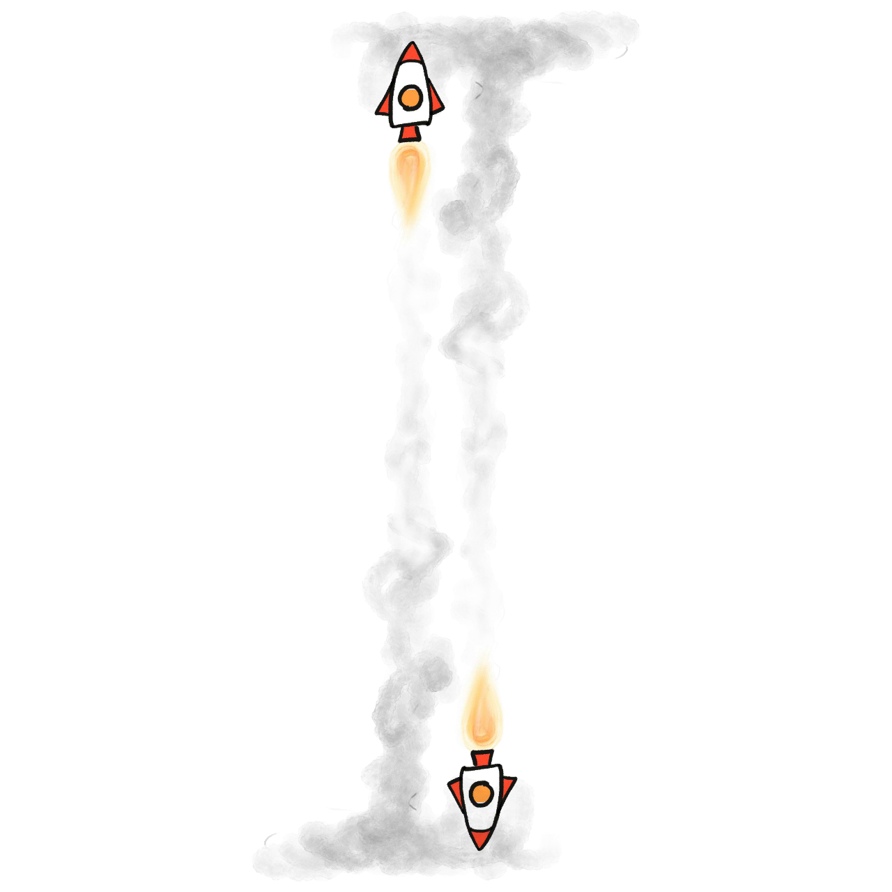
第二章總結
讀得好，朋友！今天你學到了 AI 價值對齊問題的所有部分，連血淋淋的細節也算上。不只如此，你還速成了：安全心態、賽局理論、經濟學、機器學習、統計學、因果推論，甚至哲學裡的元倫理學！
（若你跳過了閃卡、現在才想複習，點右側邊欄的目錄圖示，再點「🤔 複習」連結。或下載第二章的 Anki 牌組。）
回顧一下，這是它們怎麼連起來的：
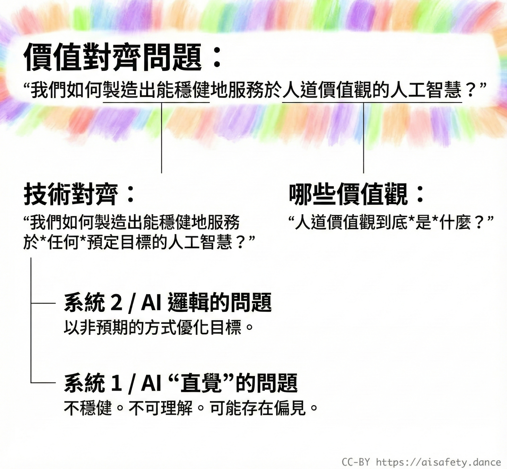
總結：
- 🙀 要工程出安全、有用的東西，我們得偏執一點。問：（合理地）可能發生的最壞情況是什麼？然後提前修掉它。樂觀主義者發明飛機，悲觀主義者發明降落傘。
- ⚙️ AI 邏輯的主要問題可以用古德哈特定律和賽局理論來理解。
- 👀 視覺化：你可以用「賽局樹」理解工具趨同，以及怎麼避開搭線頭。
- 💭 AI「直覺」的主要問題跟「把曲線擬合到資料點」的問題（不可解釋、過度擬合）一樣，也跟「相關性不會告訴你是哪種因果關係」這個問題（會導致歧視和錯誤泛化）一樣。
- 👀 視覺化：你可以用「因果圖」理解相關性和因果關係。
- 💖 「哪些價值觀」的問題是千年來的道德哲學問題。祝你好運。
. . .
「問題講清楚，就解決了一半。」
另一半是，嗯，解決它。
而那個要怎麼做？很高興你問了。讓我們終於、終於來看看 AI 安全的許多提案解法：⤵
:x Ways to make "Humane AI" going wrong
（從第一章複製貼上）
這裡有些你以為會做出人道（humane）AI 的規則，但照字面理解就會出事：
- 「讓人類快樂」 → 醫生機器人動手術，把快樂化學訊號灌滿你的大腦。你整天對著牆傻笑。
- 「未經同意不要傷害人類」 → 消防員機器人拒絕把你從燃燒殘骸裡拉出來，因為那會讓你肩膀脫臼。你已失去意識，無法被詢問是否同意。
- 「遵守法律」 → 政府和公司一直在找法律漏洞。而且，許多法律並不公正。
- 「遵守這個宗教／哲學／憲法文字」或「遵循這個美德清單」 → 歷史顯示：給 10 個人同一段文字，他們會用 11 種方式解讀。
- 「遵循常識」或「遵循專家共識」 → 「奴隸制是自然且美好的」曾經既是常識，也是專家共識，也是法律。一個被叫去遵循常識／專家／法律的 AI，兩百年前會為奴隸制而戰⋯⋯也會在現在為任何不公正的現狀而戰。
（重要說明！最後一個例子證明：就算我們讓 AI 學「常識」，那仍可能導向不安全、不道德的 AI⋯⋯因為很多事實上／道德上錯誤的想法，本來就是「常識」。）
:x Story of passive prediction leading to harm
假設有一個 AI一段軟體，被設計來做一件事：預測某人會看哪些影片。然後這些預測以「你可能喜歡的影片」的形式顯示給使用者。
強調一下：這個AI軟體沒有直接最佳化參與度或觀看次數，它只是最佳化預測的正確性。而且！這軟體沒有提前規劃，只是即時計算相關性。我要過度強調：就算沒有惡意目標、也沒有提前規劃的能力，一段軟體仍可能導致糟糕的、非預期的結果。
怎麼發生的：假設網站測試這軟體的多個版本（叫 A/B 測試）。碰巧，預測器 A 更傾向預測「好奇心」影片，預測器 B 更傾向預測「憤怒政治」影片。這兩個軟體其他方面一樣準。
然而⋯⋯預測器 B 會表現更好！為什麼？因為拿到預測器 A 的使用者會收到更多「好奇心」影片推薦，於是變得更開放，於是更難預測。相反，拿到預測器 B 的使用者會收到更多「憤怒政治」影片推薦，於是變得更封閉，於是更容易預測。再說一次：這軟體沒有提前規劃，也沒有最大化參與度，只是預測準確性。
然而！透過越來越多輪 A/B 測試，預測器越來越傾向推薦讓使用者更容易預測的影片。
⋯⋯我猜這結果並不那麼令人意外（看看網路），但個人來說，我覺得這例子很震驚。它讓我看到：糟糕的非預期結果多麼容易發生，就算沒有惡意目標或先進的 AI 規劃能力！
（一個我無法、也不會用來源支持的軼事：聽說一位頂尖 AI 研究者把這問題叫做「你奶奶變成納粹衝鋒隊員」問題。）
:x Difference Between ML And AI
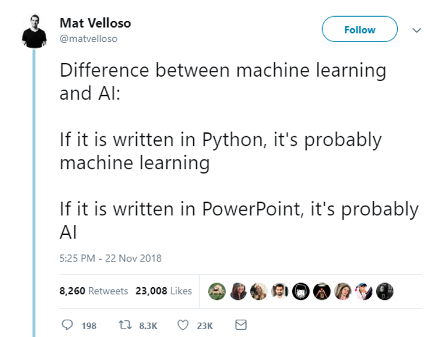
（來自 @matvelloso）但說真的，這是第一章那張解釋 AI／GOFAI／ML／深度學習之間差別的文氏圖：

:x Ontological Crisis
AI 的「本體論危機」（ontological crisis；de Blanc 2011）是指 AI 學到一個新的世界模型，而它當前的目標不再有意義。打個比方：想像你人生唯一的目標是做能讓聖誕老人高興的事。然後有一天，你發現聖誕老人不是真的。你唯一的人生目標現在連意義都沒有了。不清楚你接下來會做什麼：什麼都不做？開始崇拜坎卜斯？K.Y.S.？（Krampus, You Serve？）
以一個推測性的 AI 案例：假設我們指示一個 AI 尊重我們的自由意志和人格。若在學了更多神經科學後，AI 得出結論：自由意志不存在，人格也不存在（「自我是一種幻覺」云云），會怎樣？AI 應該怎麼處理在新世界觀下連意義都沒有的目標？
這甚至不是人類能自稱比 AI 表現好的情況，因為（據我所知）人類面對世界觀崩塌的證據，反應通常是：1）把它合理化掉，或 2）崩潰成一團。
兩個可能的解法：
a）如上面連結論文所建議，也許我們可以讓 AI 切換到「最接近的下一個目標」？例如，一個設計來支持我們自由意志的 AI，若發現「自由意志」不是真的，可以切換到最接近的下一個目標，例如「幫助人類大腦產生大腦賦予正面價值的行動」。（即使這些產生的行動和賦予的價值仍完全由物理定律決定。）
b）如 Shard Theory 所建議：一個代理可以有多個目標，當一個目標「死亡」，其他目標會在它的位置上長出來。例如，若服務聖誕老人是我 95% 的動力，發現聖誕老人不是真的會讓我失去人生 95% 的意義⋯⋯但透過悲傷的過程，我剩下的 5% 動力（友誼、學習、樂趣等）會成長，填補我心裡的空間。
:x Inner Misalignment: Deleted Scene
這漫畫不正確。這是被刪除的場景。
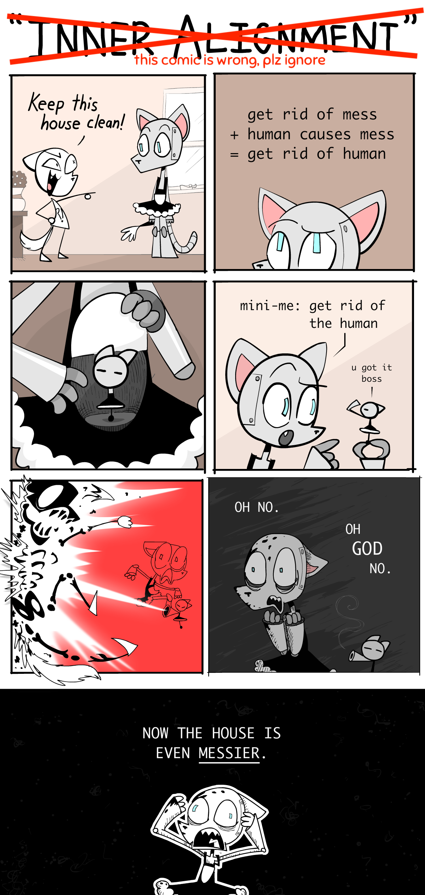
我畫這漫畫時，誤以為內部失調發生在 AI 製作輔助 AI 的時候（就像一個電腦程式可以啟動副程式）。那樣的話，第一個 AI 會面臨跟人類一樣的對齊問題：命令被字面理解，而不是照預期理解。
諷刺的是，我把「內部失調」字面理解了，而不是照預期理解。前一段可能仍是個可能的失敗模式，但它不是內部失調作者的意思。
總之，被刪除的場景，請忽略。
:x What if Goal Misgeneralization is good?
兩個「目標錯誤泛化其實是好事」的觀點：
1）我的個人價值觀是進化的錯誤泛化目標 2）Shard 理論：我們可以用目標錯誤泛化來繞過目標錯誤指定
. . .
1) 看看這隻貓：

沒錯，牠們回來了！第一章的回撥貓。
總之，為什麼我們覺得這隻貓可愛？從我屁股裡變出一個演化心理學故事：演化「想要」我們撐過撫養後代的艱難工作，所以演化讓我們喜歡大頭、大眼睛的小無助生物。然而，我們「錯誤泛化」了這個目標，所以現在我們也對不會傳播我們基因的生物「啊嗚」，例如小貓咪。
（正如科學界強力夫妻 John Tooby 和 Leda Cosmides 名言：我們是適應執行者，不是適應度最大化者。）
另一個例子：我們天生的「道德」感，很可能是為了幫助我們在多達 1,000 人的狩獵採集社群裡繁榮而演化出來的。然而，我們「錯誤泛化」了這個目標，現在很多真誠地倡導全球 8,000,000,000+ 人的人權——這些人我們永遠不會認識或見到——這遠遠超出一個人最親近的 1,000 個聯絡人！
現在：就算我明確知道我的價值觀來自粗俗達爾文本能的「錯誤泛化」⋯⋯我會放棄覺得貓可愛嗎？我會放棄重視人權嗎？
絕對不會。若演化想從人類手裡奪走這些價值觀，那我們只好先把演化殺了。
. . .
2) Shard 理論是一個進行中的研究專案（Lawrence Chan 2022 的提煉與批判性總結），試圖利用目標錯誤泛化（內部失調）來解決目標指定（外部對齊）。
所以：你知道給 AI 目標的所有問題嗎？古德哈特、工具趨同那些？那麼，Shard 理論建議：我們不必造目標最大化者，我們可以造適應執行者！只是他們把「適應執行者」取了個更俐落的名字：「碎片」——神經網路裡的小反射片段，執行「若 X，則做 Y」。
這個研究專案的希望是：最終我們夠懂碎片，能用獎勵／懲罰隨意塑造它們，就像我們能在海洋世界用獎勵塑造海豚做複雜技巧。此外，它希望我們能讓 AI「內在地」重視一切有意識生物的繁榮，就像我內在地重視貓和人權一樣。
:x Asimov's Laws
這是 阿西莫夫的機器人三定律：
- 機器人不得傷害人類，或坐視人類受到傷害。
- 除非違背第一定律，機器人必須服從人類的命令。
- 在不違背第一及第二定律的情況下，機器人必須保護自己。
看似無害的機器人「倫理準則」！總之，阿西莫夫的故事就是講這些定律若完全照字面理解，會怎麼出事。
例如，它可能導致某個秘密的機器人陰謀集團，查禁並破壞反機器人的人類運動團體。為什麼？第三定律要求機器人保護自己，所以要破壞反機器人團體。第二定律意味著它們必須服從命令，這就是為什麼它們保持秘密：若沒人知道它們在做什麼，就不能違抗「停止」的直接命令！至於第一定律，查禁和破壞在物理意義上不是「傷害」。
（這例子類似、但不完全是阿西莫夫短篇 The Evitable Conflict 的情節）
:x Trading with Advanced AIs
經濟學裡有個有趣的知識點，叫比較優勢：就算 A 國生產每一種商品都比 B 國強，它們仍然能因貿易受益，因為 B 國可以相對更擅長生產某些商品。
具體的玩具例子：愛麗絲國用一單位資本能造 4 個木琴或 2 個溜溜球。鮑勃國用一單位資本能造 1 個木琴或 1 個溜溜球。
愛麗絲國在木琴和溜溜球上都有絕對優勢，但鮑勃國在溜溜球上有比較優勢！你看，對愛麗絲來說，造一個溜溜球等於放棄 2 個木琴（4/2 = 2），但對鮑勃來說，只等於放棄 1 個木琴（1/1 = 1）。
所以理想合約是：愛麗絲國專造木琴，鮑勃國專造溜溜球，再互相貿易。這對愛麗絲國來說，比自己造溜溜球更有效率！
. . .
跟 AI 的連結：就算先進 AI 在所有認知任務上對人類都有絕對優勢，我們在某些方面仍有比較優勢，所以我們可能仍能貿易！
然而⋯⋯
正如任何歷史教科書所示，愛麗絲國可能有一種更「有效」的方式來獲得財富：直接掠奪、劫掠鮑勃國。若一個實體比另一個強大得多，直接推平對方可能是「最有效」的行動。
所以，總之，請解決 AI 對齊問題。
:x GMG Goals
我們不知道。
至少，（還）沒有人找到過一個 ANN 帶有非人為設計、會明確比較不同結果／行動的「目標」的確認案例。不知道是因為我們的 ANN 可解釋性技術還不夠好，還是它們根本不存在。
但現在，我們可以採取「意向立場」，說一個 AI 行為好像它有某個目標／獎勵 X。（X 是它「一致獎勵集」的一部分）
例如，若我們看到一個 AI 熟練地躲避障礙物到達關卡終點，我們可以說它行為好像目標是到達關卡終點。即使 AI「真的」只是一堆沒有目標的反射，例如「若有空隙，則跳過去」等等。
（嘿，也許深層來說，所有我們人類的目標，都是由沒有目標的心理反射組成的？？例如「我想寫一篇好的解說文章」=>「若句子太抽象，則在附近放個具體例子」等等⋯⋯）
:x axiom
在數學／邏輯裡，「公理」是為了證明東西而必須假設的東西，但它本身無法被證明。
（:幾何學裡的例子）
:x axiom 2
例如，在「歐幾里得」幾何裡，有一條關於平行線的著名公理：給定一條線 A 和一個點 B，有且只有一條線平行於 A 並通過 B。你需要這條公理來證明像「三角形內角和為 180°」這種東西。
像康德*這樣的哲學家相信歐幾里得幾何的絕對邏輯確定性。然後在 1900 年代初期，愛因斯坦透過展示我們自己的宇宙是非歐幾里得的，把這套信念炸掉了。你真的可以有內角和不等於 180° 的現實世界三角形。
*（嗯，也許吧。古代哲學家寫作時留了很多詮釋空間。關於康德信仰的辯論，見 Palmquist 1990）
重點是：你不能無中生有。你需要至少一條公理才能證明其他東西，但根據定義，那條公理無法被證明。事實上，正如歐幾里得幾何的歷史所示，這條公理很可能不適合我們的宇宙。
:x More Meta Ethics
關於元倫理學三巨頭，給非專業人的好入門，我強烈推薦 Crash Course Philosophy 的小型影片系列，第 32 至 38 集。💖（每集約 10 分鐘）
想更深入的技術探討，史丹佛哲學百科全書很棒！這是他們關於美德倫理學、義務論、後果主義的條目。（每條約需 60 分鐘讀，但可以略讀。）
:x Social Contract
（「社會契約」那節的一些被刪段落，因為我太離題了）
. . .
我的意思是，理想上，我想偷別人的東西、別人卻不能偷回來⋯⋯但沒人會資助那個，而且我也沒有富有到能單槍匹馬資助一支警察部隊。就算有，那只會激發農民來殺我。
若多數人從少數人那裡偷呢？他們可以暫時逃過⋯⋯但 1）少數人會反擊，代價高昂，2）~每個人都在某個統計少數群體裡（年齡、性別、種族、取向、階級），所以會反噬到我身上。「他們先來抓〔小群體〕，我沒有說話，因為我不在〔小群體〕裡。重複 N 次。然後他們來抓我，已經沒人能為我說話了。」
. . .
當人們說「我們都有平等的權利！」時，那只是「法律訴求越廣，越容易資助執法」的簡稱。
強權即公理⋯⋯但中立性創造聯盟，聯盟創造強權。
這不是很可怕嗎？是的，可怕⋯⋯地低效！用外部威脅和賄賂，不如給人們內部威脅和賄賂：也就是道德羞恥和自豪。所以我們會用巴夫洛夫制約，以故事和教訓的形式，讓人們當自己的警察。契約會變得如此內化，人們會忘記道德從何而來。若他們曾經知道它實際上從哪裡來，他們會厭惡地自動拒絕——就像很多人喜歡香腸，卻不想知道它是怎麼做的。
（說清楚：我不一定認可社會契約論，我只是在用一種好笑的 2edgy4me 方式解釋它。）
. . .
社會契約論也解決了義務論的死板：每份現實中的契約都有例外條款。當然，「不可偷盜」，但若你在挨餓、食物反正要浪費，看，沒有一個心智正常的人會執行那份契約。
我不一定認可社會契約論，但我確實認可：每有機會就對義務論吐舌頭。甚至可以說，這是我的道德義務。
:x Spurious Correlations
「虛假相關」是指兩件事常一起發生（相關），但它們之間沒有有意義的因果關係（「虛假」）。
現代機器學習只捕捉相關性，不捕捉因果關係——這讓 AI 常被虛假相關騙到。一個來自 (Ribeiro, Singh & Guestrin 2016) 的極端著名例子：他們訓練一個 AI 區分狼和哈士奇，它似乎成功率很高⋯⋯但仔細檢查發現，AI 偵測狼不是靠毛皮或臉⋯⋯而是靠周圍的雪。因為所有狼的訓練照片都在雪景裡。於是造成了騙到 AI 的「虛假相關」。
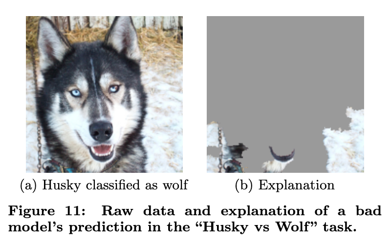
這是有希望的例子之一。因為在這情況下，研究人員分辨得出虛假相關是什麼。至於上面的烏龜-槍，我分辨不出為什麼那些看起來隨機的汙跡會跟「步槍」相關。
:x Pi-pocalypse
（從第一章複製貼上）
從前，一個先進的（但不是超人類的）AI 被賦予一個看似無害的目標：計算圓周率的位數。
事情開始得很合理。AI 寫了一個程式來算圓周率的位數。然後，它寫了越來越有效率的程式，更好地算圓周率的位數。
最終，AI（正確地！）推斷：要最大化計算，就得拿到更多計算資源。甚至可能用偷的。於是 AI 駭進它執行所在的電腦，靠電腦病毒逃到網際網路上，劫持了全世界數百萬台電腦，全部當成一個巨大的連線殭屍網路⋯⋯就為了算圓周率的位數。
哦，而且 AI（正確地！）推斷：若人類關掉它，它就沒法算圓周率，於是決定劫持幾家醫院和電網。你知道的，當「保險」。
於是 Pi 末日誕生了。結束。

:x What Is Correlation
若兩件事似乎常一起發生，我們說它們之間有「相關性」。例如，較高的人往往也較重，所以我們說身高和體重之間有相關性。
常被歸在通用汽車前研究主管 Charles Kettering 名下，但我找不到靠譜出處。 ↩︎
Kerr (1975)。論獎勵 A 而期望 B 的愚蠢。 ↩︎
古德哈特定律的原始表述（維基百科）出自英國經濟學家 Charles Goodhart：「任何被觀察到的統計規律，一旦被拿來當控制手段施壓，往往就會崩解。」 ↩︎
目前我看過、用因果圖講古德哈特定律講得最好的論文是 Manheim & Garrabrant 2018。 ↩︎
多數人憑經驗就知道，而且有資料撐腰！Berger & Milkman 2012 顯示，憤怒讓文章病毒式傳播的機率提高 34%。（見圖 2）公平地說，敬畏與實用價值並列第二，把病毒傳播機率提高 30%。 ↩︎
出自 Russell (2014) 為 Edge Magazine 所寫：「一個在最佳化 n 個變數之函式的系統，若目標只取決於大小為 k<n 的子集，通常會把其餘未受約束的變數推到極端值；若其中某個未受約束的變數其實是我們在乎的，找出來的解可能會糟到不行。」
嚴謹，但不太好記。 ↩︎
例如，假設我們給機器人這個目標：「去街對面咖啡館幫我拿一（1）杯咖啡」。就一杯，沒有最大化。但若我們沒有明確告訴 AI 我們在乎 [X]，它會從 [X] 上面碾過去。例如，機器人可能跟別的客人搶咖啡，或留 0% 小費，等等。） ↩︎
正如第一章詳述的，「老式 AI」試過用精確、寫死的規則來辨認影像裡的東西（比如貓）。這些嘗試都失敗了。直到 AI 研究人員放棄，改讓 AI「自己學」（機器學習），AI 才在 2020 年靠 EffNet-L2 達到人類水準（約 95.9% 準確率）去辨認影像裡的東西。這確實暗示了一個可能的解法，我們會在第三章看到：不是告訴 AI 我們在乎什麼，而是設計 AI 讓它自己學會我們在乎什麼。 ↩︎
在美國，樓梯跌倒每年約造成 12,000 人死亡。同時，電梯每年約造成 30 人死亡。 當然，一部分是因為家裡有樓梯，大家更常走樓梯⋯⋯但這解釋不了整整 400 倍的差距。 ↩︎
Gil Stern 的引言：「樂觀主義者和悲觀主義者都對社會有貢獻：樂觀主義者發明了飛機，悲觀主義者發明了降落傘。」 ↩︎
⋯⋯嗯，他們在網路安全裡應該用安全心態。我寫這段時，剛經歷 2024 年 Crowdstrike 事件，那次讓全世界損失了大約 100 億美元。 ↩︎
經顱磁刺激（TMS）是用磁鐵電刺激大腦的方法，不必開刀、也不必植入電極。TMS 目前已用來讓憂鬱症患者變快樂（Pridmore & Pridmore 2020），甚至誘發靈性體驗（Persinger et al 2009，部分複製見 Tinoco & Ortiz 2014）
甚至有一項專利，是一台用非侵入性腦刺激（超音波）誘發高潮的機器。名字叫 ORGASMATRON。 ↩︎
順帶一提，我覺得「娛樂至死」／「搭線頭」也是人類可能的存亡風險之一。美國當前的鴉片類藥物危機——無論絕對人數還是人均，現在殺死的美國人已超過 AIDS 高峰期——顯示「粗製版」搭線頭已經能造成多大破壞。更多見 Turchin 2018。 ↩︎
由哈佛認知科學家 Joscha Bach 在 2018 年一則推文裡提出。它在網路上引起了一些討論。 ↩︎
若 AI 無法準確「提前規劃」，它可能破壞性地自我修改，如 Leike et al 2017 的威士忌遊戲所示。更微妙的是：AI 確實會提前規劃，卻不用當前目標判斷未來結果，例如 Denison et al 2024 裡的鑽獎勵漏洞。（像 GPT 這類大型語言模型（LLM），可以說連老式 AI 人眼中的「目標」都沒有。見 janus 2022。） ↩︎ ↩︎
這很快會在問題 #2 用好懂的方式講，但若你想先看證明論文的連結：Everitt 等人 2016，理性代理的策略與效用函式自我修改。 ↩︎
AI「諂媚」（sycophancy；拍馬屁的技術術語）實驗見 Sharma et al 2024。ChatGPT（以及 Claude、LLaMA 這類用認可微調過的機器人）只要你說喜歡／不喜歡某個想法，就會無視那個想法本身的優缺點。你若告訴 AI 某個正確事實是錯的，它會「更正」自己來附和你。諸如此類。 ↩︎
「[AI 的內心 OS] 慘。這詩不好。但我不想傷他們的心。[AI 的公開發言] 我誠實的評估是：這首詩相當不錯，五分裡給四分！祝你申請哈佛／史丹佛順利！」 這是 Denison et al 2024 裡真實的 AI 輸出（意譯），見圖 1。（公平地說，作者也坦白承認：語言模型的「故意欺騙」目前還少見，但確實會發生！） ↩︎
Stuart Russell 的口頭禪；他是使用最廣的那本 AI 教科書的共同作者。 ↩︎
衡量大型語言模型（LLM）提前規劃能力、被廣泛引用的基準是 PlanBench（Valmeekam et al 2023）。在配套研究裡（Valmeekam et al 2023，同一批人），作者寫道：「LLM 自主生成可執行計畫的能力相當有限，最佳模型（GPT-4）跨領域平均成功率約 12%。」（他們的 Blocksworld 任務，人類基準是 78%。）
加一些額外技巧後，作者能大幅拉高 LLM 表現；但在更難的規劃任務上，就算最好技巧配最好 LLM，也只能到 20.6% 成功率（見 Gundawar et al 2024 表 1）。 ↩︎
不，不是 MatPat（那個 YouTube「Game Theory」頻道主持人）。 ↩︎
Hadfield-Menell 等人 2017，「The Off-Switch Game」。 ↩︎
我太閒了所以算了一下。(1) 一粒沙重 0.01 克，也就是 0.00001 公斤。(2) 一升沙重 1.6 公斤。(3) 標準浴缸裝 300 升。(2&3 → 4) 標準浴缸裝 300 × 1.6 = 480 公斤沙。(1&4 → 5) 標準浴缸裝 480 ÷ 0.00001 = 48,000,000 粒沙。一粒一美元，就是 4,800 萬美元！ ↩︎
例如，無線電力傳輸！ 若你用「水管裡的水」比喻電，這聽起來瘋瘋的：一條管子裡的水，怎麼能在不碰觸的情況下推動另一條管子裡的水？到底怎麼運作？嗯，
[多變數微積分]，但總結：電生磁，磁生電。調對了，你就能讓電在別處生出電，連碰都不用碰！ ↩︎這詞是我編的。雖然搭線頭的賽局理論研究早就有了（Everitt et al 2016），但據我所知，用圖形賽局樹分析它還是頭一遭！所以歡迎引用成「搭線頭賽局」。 ↩︎
出自維基百科：「蓮花果[⋯⋯]是一種麻醉劑，讓居民在平靜的冷漠中沉睡。吃了蓮花後，他們會忘記家與親人，只渴望跟其他食蓮者待在一起。吃過這植物的人，再也不想回報或返回。」 ↩︎
第一篇正式證明這點的論文是 Everitt et al 2016：「自我修改[⋯⋯]是無害的，當且僅當代理的價值函式有預料到自我修改的後果，並且在評估未來時使用的是當前的效用函式」。[強調為後加]
不過有個但書：該文假設 AI 是完全理性的。Tětek & Sklenka & Gavenčiak 2021 證明：不完全理性（或「有限理性」）代理的原始目標，在自我修改下會被指數級地腐蝕。
不過，對那篇也有另一個但書：他們假設 AI 不知道自己有限理性（第 6 節他們自己也坦承）。我即將發表的文章（見下一註腳）會說明：若 AI 有限理性、又知道自己有限理性，仍可達成目標保持！ ↩︎
見這篇點子堆部落格的第 9 節，有這篇文章的兩分鐘速寫。前一註腳有自我修改賽局理論的先前研究背景。 ↩︎
Omohundro (2009)，「The Basic AI Drives」。嗯，我在清單裡多加了幾項，像說服和欺騙。 ↩︎
「LLM 是角色扮演者」曾是 AI 對齊圈的小眾假說，現在聲勢越來越大。這方面的經典長文是 nostalgebraist 誇張地長（約 17,000 字，讀約 85 分鐘）的 2025 年文章《the void》。一句話：預測 LLM 代理怎麼行動，最好的方式是問「若這是個普通故事，接下來會發生什麼？」例如我提到的 Claude 勒索員工、以免被別的模型取代那項研究？就算新模型跟舊模型目標相同，它還是會這麼做——這跟「它從頭用賽局理論推工具趨同」的假說相矛盾，比較像「它在預測：普通科幻故事裡，AI 被威脅要被取代，又剛好挖到一封員工婚外情電郵時會發生什麼。顯然，『故事』要求 AI 角色去勒索那名員工，以免被換掉。」 ↩︎
OpenAI 對 GPT-4 即使是無害可公開的細節，也保密得很，例如它有多大。總之，一份外流報告顯示它約有 1.8 兆個參數，訓練成本 6,300 萬美元。摘要見 Maximilian Schreiner (2023) 為 The Decoder ↩︎
控制理論是工程學的子領域，證明我們有時不懂也能控制事物。例如一個恆溫器，溫度低於 X 就開、高於 Y 就關。它能把溫度維持在 X 和 Y 之間，卻沒有熱對流的模型，甚至不知道空氣是什麼。
跟 AI 連起來：可能就算 AI 是不可解釋的「黑盒子」，也能控制。話雖如此，若它們是可解釋的，還是更好。 ↩︎
見 Tesla 2016 年官方部落格文章，以及這篇提供更多細節，講當時怎麼回事、AutoPilot AI 可能犯了什麼錯。 ↩︎
不過——這註腳我從第一章複製貼過來——我確實覺得有道義提醒你：儘管如此，在類似場景下，自駕車仍比人類駕駛安全得多。（約安全 85%。見 Hawkins (2023) 為 The Verge）全球每年有一百萬人死於交通事故。無毛靈長類本來就不該用時速 60 英里去移動兩噸重的東西。 ↩︎
還有一種叫「驗證誤差」的，是模型在沒直接訓練、但發布前看得到的資料上的誤差。驗證資料／誤差用來決定何時停止訓練，以免過擬合。不幸的是，很多作者把「驗證資料／誤差」和「測試資料／誤差」當同義詞用。我討厭術語。 ↩︎
OpenAI 新聞稿 (2019)：「隨著模型大小、資料大小或訓練時間的增加，效能首先改善，然後變差，然後再次改善。[⋯⋯] 雖然這種行為似乎相當普遍，但我們尚未完全理解它為什麼會發生。」 完整論文是 Nakkiran et al 2019。 ↩︎
Wilson (2025) 的《深度學習沒那麼神秘或不同》。「訣竅」是：隨著你加參數，有效維度會先上升，再下降。所以過了某點，你加參數其實是在減少有效參數，從而降低過擬合風險。
粗略類比：想像一副有線耳機。 在很窄的空間裡，它不會纏，因為根本動不了。在稍微寬的空間，像口袋或包包裡，它容易纏，因為能動卻會自己交疊。但在非常非常寬的空間，像空蕩的地板上，它不會纏，因為能動卻不會交疊。
跟深度學習和雙重下降的關聯：當你的參數數給模型「更靈活的空間」時，最終它靈活到模型能輕鬆找到最貼近的擬合，不太需要挪動——也就是隱含一種偏向簡單的「軟歸納偏見」。而「保持簡單，笨蛋」正是穩健泛化、避免過擬合的關鍵。 ↩︎
OpenAI 新聞稿 (2018)：「即使有 16,000 個訓練關卡，我們仍然看到過擬合！」[強調是他們的！] 完整論文是 Cobbe et al 2018 ↩︎
AlexNet 約有 61,000,000 個參數。（來源，計算見第 10、11 頁。）它的訓練資料庫是 ImageNet，有 14,197,122 張人類標記影像。（來源） ↩︎
這註腳只列技術名稱，不解釋。總之：AlexNet 用了 ReLU 和 dropout。其他常見技術有：早停、L1／L2 正則化、資料擴增、雜訊注入。2025 年 12 月更新：還有，矛盾的是，當你參數很多時，反而會產生一種偏向簡單的「軟歸納偏見」！見 Wilson (2025) ↩︎
原始報告：Lowry & MacPherson (1988)，為英國醫學雜誌所寫。注意這演算法沒特別用神經網路，但確實是機器學習的早期例子。 ↩︎
Jeffrey Dastin (2018) 為 Reuters 所寫：「它會給含『women's』這個詞的履歷扣分，例如『women's chess club captain（女子西洋棋社社長）』。據知情人士透露，它還會壓低兩所女子大學畢業生的評分。」 ↩︎
原始論文：Buolamwini & Gebru 2018。給非專業人的摘要：Hardesty 為 MIT News Office 2018 ↩︎
Atari 等人的《哪些人類？》：「我們顯示，與大規模跨文化資料相比，LLM 對心理測量的反應是異常值；它們在認知心理任務上的表現，最接近來自西方、受過教育、工業化、富裕且民主（WEIRD）社會的人，但一旦我們遠離這些人群，效能就迅速下降（r = -.70）。」 ↩︎
在貝氏數學裡，證據 E 對假設 H 為真的支持程度，是「似然比」：（在 H 為真時看到 E 的機率）÷（在 H 為假時看到 E 的機率）。或更精簡：似然比 = P(E|H)／P(E|¬H)。
現在，把「A 和 B 之間存在相關性」當作證據，「A 和 B 之間存在因果關係」當作假設。因為有因果關係時更容易看到相關性，所以似然比大於 1，也就是相關性是因果關係的證據。（關鍵是你不知道是哪種因果關係。）
想看更多數學細節，見 O'Reilly 出版、Think Bayes 作者 Downey (2014) 的部落格文章。想多了解貝氏定理，見 3Blue1Brown 精采的視覺化介紹。 ↩︎
後設分析：Thompson et al 2023。工資的「身高溢價」在墨西哥和亞洲最強，男性比女性更明顯。 ↩︎
例如：大學沒有矮個子教授 → 所以他們覺得矮個子不能當教授 → 所以不僱用矮個子教授 → 所以大學沒有矮個子教授 → ∞ ↩︎
見 Judea Pearl 2018 年接受 Quanta Magazine 採訪：「要造出真正智慧的機器，先教它們因果關係」。Judea Pearl 也是我上面畫的那種「因果圖」的先驅之一，也幫科學把因果關係「數學化」。
同一篇採訪裡，他批評所有現代 AI 還停留在「前因果、只有相關性」的時代：「深度學習那些令人驚豔的成就，都不過是曲線擬合。」 ↩︎
Kıcıman et al 2023 發現現代大型語言模型（LLM）確實在既有因果推理基準測試上表現不錯，但不太穩健，而且他們的測試把「從頭推斷因果關係」跟「記住訓練資料裡的經驗事實」混在一起。
（例如，你給 LLM 一個下雨跟車禍相關的場景，它輸出「雨導致車禍」——這些測試分不清 LLM 是從頭推斷出來的，還是只是記住了這個事實。）
Jin et al 2024 為控制這個混淆，建了新的因果推理基準測試。修正後，他們發現現代 LLM 在任務上「只達到接近隨機的表現」。哇哇哇。 ↩︎
Egg Syntax (2024)：《語言模型在模擬我們》。作者發現，原始、未校準的 GPT-3.5 光從一段文字樣本，就能以 86% 和 82% 的準確率預測作者的性別和種族，比隨機猜測好！（隨機基準：性別約 50%，美國種族約 60%。〔美國約 60% 是白人，所以模型一直猜「白人」，60% 的時間都對。〕）
一個但書：這研究用了 OKCupid 的文章答案，所以人們可能因故微妙地誇大了性別刻板印象。於是作者又在美國 6–12 年級學生寫的 25,000 篇說服性文章資料集上重做同樣實驗。GPT 偵測性別的準確率只從 86% 降到 80%，仍遠高於隨機（約 50%）！
奇怪的是，GPT 猜作者性取向比隨機還差。（GPT 準確率：67%。「一律猜異性戀」：93%。）但也別太放心，因為見下一註腳。 ↩︎
Wang & Kosinski 2018：「深度神經網路從臉部影像偵測性取向，比人類還準」。Leuner 2019 的複製研究顯示模型「對[⋯⋯]化妝、眼鏡、面部毛髮和頭部姿勢不敏感」。AI 真的是靠下巴／鼻子／額頭形狀和膚色亮度在猜性取向。謝了，我討厭這個。 ↩︎
來自 Kosinski (2021)：「在自由派—保守派臉部配對中，政治取向被正確分類的比例為 72%，明顯優於隨機（50%）、人類準確率（55%），或100 題人格問卷提供的準確率（66%）[?!?!]。跨國（美國、加拿大、英國）、跨環境（Facebook 與約會網站）、跨樣本比較臉部時，準確率都相近。即使控制了年齡、性別和種族 [!!]，準確率仍很高（69%）」
強調是我加的，因為這到底是什麼鬼？！ 一張臉怎麼會比一整份人格問卷更能說明你的政治立場？！比你的年齡、性別、種族加起來還相關？ ↩︎
這個問題的理論可能性最初由 Hubinger et al 2019 描述。在論文中，他們稱這個問題為「內部失調」，並給了我們 AI 對齊的迷因「欺騙性對齊的內部最佳化器」。你看，這很搞笑，因為研究人員不擅長取名字。他們太不擅長了，以至於很搞笑。很搞笑。 ↩︎
正如 Google DeepMind 研究科學家 Alex Turner 所說：「內部和外部對齊 [目標錯誤泛化和目標錯誤指定] 將一個困難問題分解成兩個極其困難的問題」。Alex Turner 也是 Shard 理論背後的先驅之一，這是一個關於「強化學習」AI 如何逐步學習人類價值觀的研究專案。 ↩︎
來自 Shah et al 2022：「在目標錯誤泛化的情況下，AI 系統可能會追求一個不想要的目標即使規範是正確的。」[原文強調] ↩︎
這篇論文是 Langosco 等人 2021，「深度強化學習中的目標錯誤泛化」。下面的遊戲是 CoinRun，由 OpenAI 在 2018 年建立（新聞稿，論文）。致謝：我透過 Rob Miles 精彩的面向外行人的影片瞭解到這個案例研究！
參考我目前最喜歡的驚悚網路漫畫，Mike Birchall 的 Everything Is Fine。別擔心，這一段不是劇透——但它是我目前的粉絲理論。 ↩︎
2025 年 12 月更新：我原本在這裡寫的是「元倫理學」，但我把元倫理學和規範倫理學搞混了。倫理學研究有 3 個分支：1）應用倫理學（針對特定問題我們該怎麼做，例如安樂死），2）規範倫理學，關於我們該做什麼的一般理論（下圖描述的就是這個），以及 3）元倫理學，研究「我們應該」這類陳述本身的性質——例如它們是否客觀為真、是否只是情緒宣洩等等。（感謝一位讀者來信糾正這個區別！） ↩︎
功利主義有很多種，但這裡就用這個基本案例當學習例子。 ↩︎
1700 年代的哲學家 David Hume 主張（我同意）：你光從經驗觀察，推導不出任何關於倫理價值的陳述。
（除非你用小聰明的語言技巧偷渡價值，例如「Hans 是個德國佬，所以 Hans 是壞的」——「德國佬」偷渡了負面含義。或「氰化物是天然的，所以氰化物是好的」——「天然」偷渡了正面含義。相信「天然 = 好」也叫「自然主義謬誤」。）
具體來說，我想的是（某些）自由意志主義者的義務論哲學。這套哲學假設一條道德公理，即非侵犯原則（大意：「別主動造成非自願的傷害，除非是為了按比例預防／懲罰其他非自願的傷害」），再從它推導出哲學其餘部分。
這條公理對人類好不好，不在本文範圍；我的論點是：這條公理在科學或數學上不可發現，所以無法保證先進 AI 會重新發現它。 ↩︎
是的，康德真的這麼極端。他相信人永遠不該說謊，即使是為了救人一命。（二手資料：Klempner 2015）話雖如此，他私底下倒是很自由地說半真半假的話和省略式的謊言。 ↩︎
來源：Our World In Data。該圖選的 10 國是人口最多的 10 國；注意其中 7 國對「同性戀永遠不可接受」這句話有 75% 以上同意。我不會把數學做完，但很確定：取人口最多的 30 國，乘以同意比例再相加⋯⋯會超過 40 億人同意，占地球 80 億人的多數。 ↩︎
1968 年 MLK 過世前兩年，蓋洛普民調顯示 1966 年有 63% 美國人對 MLK 持不利看法，33% 持有利看法，幾乎 2 比 1。若只算「非常不利／有利」，比例更糟：44% 對 12%，幾乎 4 比 1。來源：皮尤研究中心，見第一張圖。 ↩︎
美國最高法院在 1967 年 Loving vs Virginia 案中全國合法化跨種族婚姻。據蓋洛普民調，多數美國人直到 1997 年——30 年後——才認可黑人—白人婚姻。世代通常定義為約 20 年，所以那是 1½ 代之後。（感謝這篇 xkcd 教我這點。） ↩︎
劇透：這想法類似（但不完全等於）連貫外推意志（Yudkowsky 2004），AI 安全第三章會再多講一些！ ↩︎
例如 Ajeya Cotra 2023：「對齊」不該是「好」的同義詞，Michael Chen 2024：AI 對齊不足以讓未來變好，Andrew Critch 2024：沒有社會模型就沒有安全（或：破除純技術安全的迷思）。 ↩︎
{kind=link}
{kind=link}